143 original pages · 136 instructional pages · 294 questions. Every instructional slide has mapped practice. Original figures, text, slide credits, dense treatment tables, and review prompts are retained. Title, objectives, divider, and closing pages are preserved without administrative quiz questions.
Use this map to audit coverage or review the exact source material. Question explanations test and expand the clinical concepts; full tables retain dose, trial, and numeric details that are not all tested as separate recall items. Document assignments, links, and contact information are source content, not instructions for this build.
Corrections and framework dates
- Glaucoma slides 11–12: the circulating fluid is aqueous humor, not vitreous. Conventional outflow is through trabecular meshwork and Schlemm canal. Reduced outflow is the usual open-angle mechanism.
- Slide 18: the optic nerve sheath contains a subarachnoid space; a “large subdural space” is not the defining glaucoma lesion.
- Slides 22/63: anterior chamber flare is principally protein scattering light, while cells are inflammatory leukocytes.
- Slides 41–42/49: diabetic microangiopathy involves retinal capillaries. Cotton-wool spots are ischemic nerve fiber layer lesions with axoplasmic accumulation, distinct from hard exudates and hemorrhages.
- Slides 34–38: uncomplicated posterior vitreous detachment is distinct from retinal detachment and is often observed after a retinal tear is excluded. Nonrhegmatogenous detachment includes exudative and tractional mechanisms.
- Slides 51–52: papilledema means disc edema from elevated ICP. Workup and treatment depend on the cause. Mannitol is a selected emergency temporizing measure, not universal long-term treatment; severe hypertension with acute end-organ injury requires monitored treatment.
- Slide 55: heritable retinoblastoma is not synonymous with a positive family history; de novo germline variants occur and unilateral disease can be heritable. RB restrains E2F-mediated cell cycle entry.
- Demyelination slides 18/24 teach the 2017 McDonald criteria. Slides 35–36 discuss then-proposed revisions; the later published 2024 revisions add the optic nerve as a fifth topography and selected kappa FLC, central vein, and paramagnetic rim pathways. Questions identify the framework rather than combining shorthand rules.
- Demyelination slide 55: MG classically shows decrement on low-frequency repetitive stimulation; LEMS shows postexercise/high-frequency facilitation.
- Demyelination slide 61: future vaccination after GBS requires individualized review of timing and current vaccine-specific guidance; a blanket ban on all repeat vaccination is too broad.
- Autoimmune nodopathies and anti-MAG neuropathy are distinguished from conventional CIDP. Sural sparing supports but does not prove an inflammatory neuropathy. Modest protein elevation, cold limbs, and entrapment slowing can mislead.
- Trial response percentages, epidemiologic estimates, RIS conversion rates, cohort survival, ultrasound performance, and antibody titers are context-dependent. Full lecture tables are retained below; they are not universal patient predictions or direct cross-trial rankings. Pregnancy and drug-monitoring decisions require the agent-specific current guidance rather than an unconditional slide claim.
- Current dry-AMD care includes selected therapies for geographic atrophy; neither supplements nor these therapies restore lost vision or constitute a universal cure. Questions focus on the lecture's disease mechanisms and distinguish dry from neovascular disease.
Verification references
Clinical corrections were checked against the following references on October 16, 2026. The supplied decks define the scope; questions are original and do not reproduce official NBME items.
Slide map
Visual disorders
Original PDF: 2026 NNN Med 808 Visual Disorders 261012 lecture.pdf
| Slide | Source title | Practice |
|---|
| 1 | N3 | Administrative page retained |
| 2 | Proptosis | Q001, Q021 |
| 3 | Proptosis • Increase in orbital contents | Q002, Q021 |
| 4 | Grave’s disease | Q001, Q021, Q271 |
| 5 | Cataracts | Q003, Q022, Q035, Q037, Q272 |
| 6 | Cataracts | Q003, Q272 |
| 7 | Cataracts | Q022, Q272 |
| 8 | Cataracts | Q004, Q036, Q272 |
| 9 | Glaucoma | Q005, Q006, Q040, Q041, Q042, Q273 |
| 10 | Glaucoma | Q040, Q041 |
| 11 | Glaucoma | Q023, Q038, Q039 |
| 12 | Glaucoma • Open-Angle Glaucoma • Usually slow and progressive | Q005, Q023, Q043, Q273 |
| 13 | Glaucoma • Primary Angle | Q006, Q024 |
| 14 | Glaucoma • Secondary Angle | Q025 |
| 15 | Glaucoma | Q026, Q273 |
| 16 | Glaucoma | Q026, Q041, Q273 |
| 17 | Glaucoma | Q026 |
| 18 | Glaucoma | Q026 |
| 19 | Glaucoma | Q025, Q043, Q044 |
| 20 | Autoimmune disorders of the eye | Q007, Q019, Q020 |
| 21 | Uveitis • Uvea consists of • Iris • Choroid • Ciliary body • Uveitis causes • Autoimmune • Sympathetic ophthalmia • Condition that blinded Louis | Q045, Q046, Q047 |
| 22 | Uveitis | Q007, Q027, Q047 |
| 23 | Age related macular degeneration (AMD) | Q008, Q048, Q274 |
| 24 | Age related macular degeneration (AMD) | Q008, Q028, Q048, Q274 |
| 25 | Age-related macular degeneration (AMD) | Q009, Q029, Q050, Q275 |
| 26 | Age-related macular degeneration (AMD) | Q009, Q029, Q050, Q275 |
| 27 | Distinguishing Dry from Wet AMD | Q048, Q049, Q050, Q274, Q275 |
| 28 | Uveal melanoma | Q010, Q276 |
| 29 | Uveal melanoma | Q051, Q054, Q055, Q276 |
| 30 | Uveal melanoma • Most common primary | Q010, Q051, Q276 |
| 31 | Uveal melanoma | Q052, Q276 |
| 32 | Uveal melanoma | Q053, Q276 |
| 33 | Uveal melanoma | Q054, Q276 |
| 34 | Posterior vitreous detachment | Q011, Q056, Q277 |
| 35 | Posterior vitreous detachment | Q011, Q056, Q277 |
| 36 | Retinal detachment | Q012, Q058, Q277 |
| 37 | Retinal detachment | Q030, Q057 |
| 38 | Retinal detachment | Q057 |
| 39 | Retinal detachment | Q012, Q030, Q058, Q277 |
| 40 | Diabetic retinopathy | Q013, Q278 |
| 41 | Diabetic retinopathy | Q013, Q031, Q059, Q060, Q278 |
| 42 | Diabetic retinopathy | Q059 |
| 43 | Diabetic retinopathy • Proliferative diabetic | Q014, Q032, Q061, Q278 |
| 44 | Diabetic retinopathy • Proliferative diabetic | Q032, Q061, Q278 |
| 45 | Diabetic retinopathy | Q014, Q061, Q278 |
| 46 | Hypertensive retinopathy | Q015, Q033 |
| 47 | Hypertensive retinopathy • Sclerotic changes in | Q015, Q033, Q062 |
| 48 | Hypertensive retinopathy | Q059 |
| 49 | Hypertensive retinopathy | Q033, Q059 |
| 50 | Hypertensive retinopathy | Q063, Q279 |
| 51 | Papilledema • Caused by increased | Q016, Q034, Q063, Q279 |
| 52 | Papilledema • Non-hypertensive causes | Q016, Q063, Q064, Q279 |
| 53 | Retinoblastoma | Q017, Q280 |
| 54 | Retinoblastoma | Q017, Q067, Q280 |
| 55 | Retinoblastoma • Tumor suppressor: RB The Governor of | Q065, Q066, Q280 |
| 56 | Retinoblastoma • Small, round blue cells • Flexner-Wintersteiner rosettes • (white arrow) • Arrangements of a single layer of | Q068, Q280 |
| 57 | Cherry-red spot | Q018, Q069 |
| 58 | Questions | Administrative page retained |
| 59 | Orbit | Q001, Q021, Q271 |
| 60 | Anterior segment | Q003, Q035, Q037, Q272 |
| 61 | Anterior segment | Q023, Q038, Q039 |
| 62 | Optic nerve | Q026, Q273 |
| 63 | Anterior chamber | Q007, Q027 |
| 64 | Retina | Q008, Q028, Q048, Q049, Q274 |
| 65 | Retina | Q009, Q029, Q050, Q275 |
| 66 | Uvea | Q010, Q051, Q052, Q276 |
| 67 | Posterior chamber | Q011, Q056, Q277 |
| 68 | Posterior chamber and retina | Q012, Q030, Q277 |
| 69 | Retina | Q014, Q061, Q278 |
| 70 | Retina | Q059 |
| 71 | Retina | Q015, Q033 |
| 72 | Retina • What structure is this? • What structure is this and | Q015, Q062 |
| 73 | Optic nerve | Q016, Q034, Q063, Q064, Q279 |
| 74 | Retina | Q017, Q066, Q280 |
| 75 | Retina | Q069 |
Visual disorders · original slide 1
Title, objectives, divider, or closing page.
Show original slide (full image and credits)
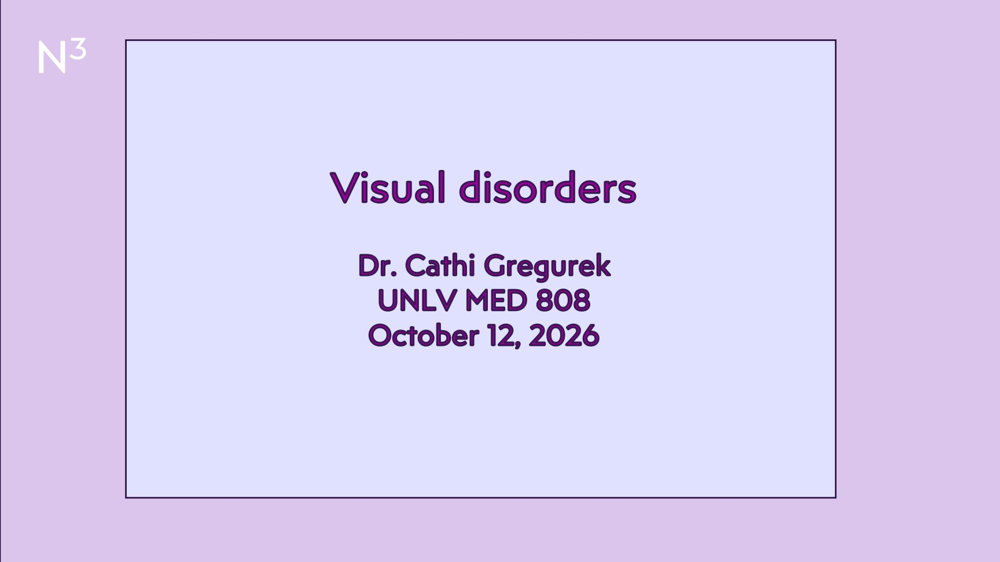
Extracted text
N3
Visual disorders
Dr. Cathi Gregurek
UNLV MED 808
October 12, 2026
Visual disorders · original slide 2
Q001, Q021
Show original slide (full image and credits)
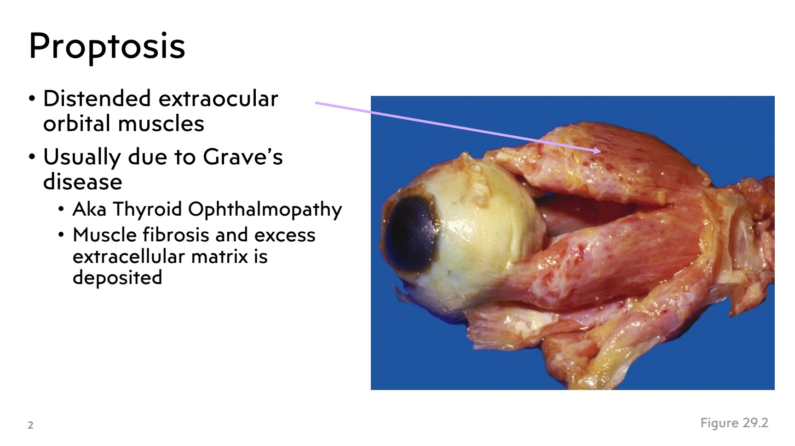
Extracted text
Proptosis
• Distended extraocular
orbital muscles
• Usually due to Grave’s
disease
• Aka Thyroid Ophthalmopathy
• Muscle fibrosis and excess
extracellular matrix is
deposited
2 Figure 29.2
Visual disorders · original slide 3
Q002, Q021
Show original slide (full image and credits)
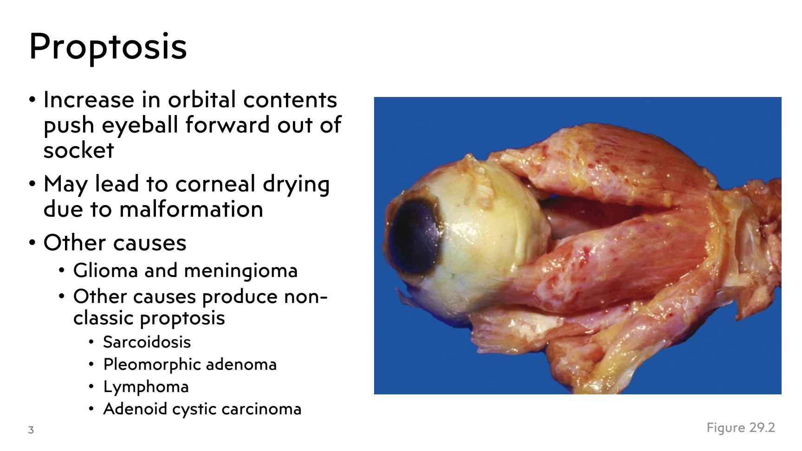
Extracted text
Proptosis • Increase in orbital contents
push eyeball forward out of
socket
• May lead to corneal drying
due to malformation
• Other causes • Glioma and meningioma • Other causes produce non
-
classic proptosis • Sarcoidosis • Pleomorphic adenoma • Lymphoma • Adenoid cystic carcinoma
3 Figure 29.2
Visual disorders · original slide 4
Q001, Q021, Q271
Show original slide (full image and credits)
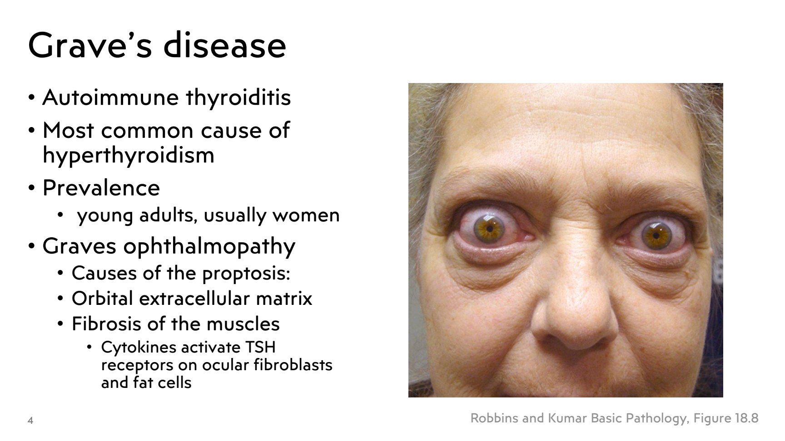
Extracted text
Grave’s disease
• Autoimmune thyroiditis
• Most common cause of
hyperthyroidism
• Prevalence
• young adults, usually women
• Graves ophthalmopathy
• Causes of the proptosis:
• Orbital extracellular matrix
• Fibrosis of the muscles
• Cytokines activate TSH
receptors on ocular fibroblasts
and fat cells
4 Robbins and Kumar Basic Pathology, Figure 18.8
Visual disorders · original slide 5
Q003, Q022, Q035, Q037, Q272
Show original slide (full image and credits)
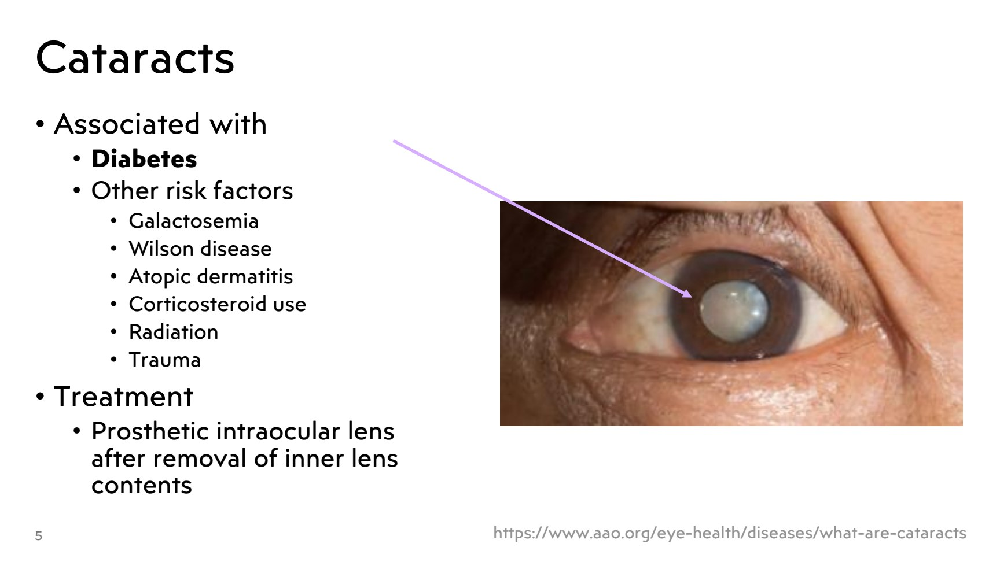
Extracted text
Cataracts
• Associated with
• Diabetes
• Other risk factors
• Galactosemia
• Wilson disease
• Atopic dermatitis
• Corticosteroid use
• Radiation
• Trauma
• Treatment
• Prosthetic intraocular lens
after removal of inner lens
contents
5 https://www.aao.org/eye-health/diseases/what-are-cataracts
Visual disorders · original slide 6
Q003, Q272
Show original slide (full image and credits)
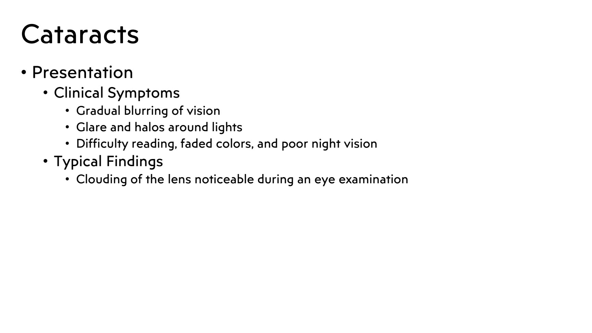
Extracted text
Cataracts
• Presentation
• Clinical Symptoms
• Gradual blurring of vision
• Glare and halos around lights
• Difficulty reading, faded colors, and poor night vision
• Typical Findings
• Clouding of the lens noticeable during an eye examination
Visual disorders · original slide 7
Q022, Q272
Show original slide (full image and credits)
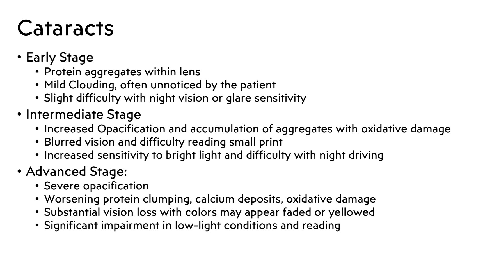
Extracted text
Cataracts
• Early Stage
• Protein aggregates within lens
• Mild Clouding, often unnoticed by the patient
• Slight difficulty with night vision or glare sensitivity
• Intermediate Stage
• Increased Opacification and accumulation of aggregates with oxidative damage
• Blurred vision and difficulty reading small print
• Increased sensitivity to bright light and difficulty with night driving
• Advanced Stage:
• Severe opacification
• Worsening protein clumping, calcium deposits, oxidative damage
• Substantial vision loss with colors may appear faded or yellowed
• Significant impairment in low-light conditions and reading
Visual disorders · original slide 8
Q004, Q036, Q272
Show original slide (full image and credits)
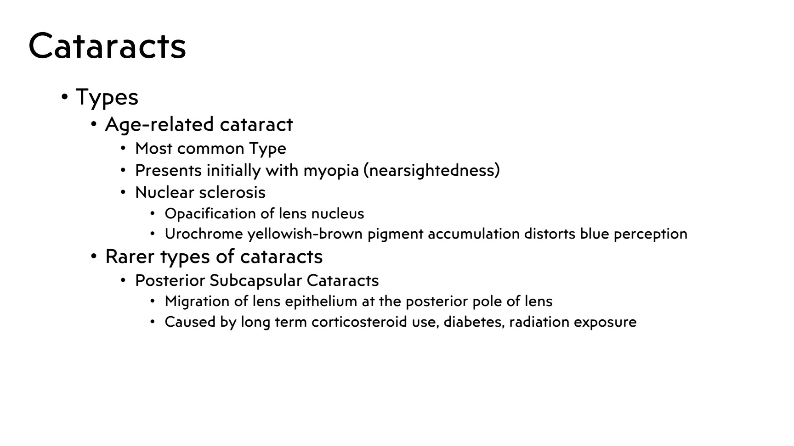
Extracted text
Cataracts
• Types
• Age-related cataract
• Most common Type
• Presents initially with myopia (nearsightedness)
• Nuclear sclerosis
• Opacification of lens nucleus
• Urochrome yellowish-brown pigment accumulation distorts blue perception
• Rarer types of cataracts
• Posterior Subcapsular Cataracts
• Migration of lens epithelium at the posterior pole of lens
• Caused by long term corticosteroid use, diabetes, radiation exposure
Visual disorders · original slide 9
Q005, Q006, Q040, Q041, Q042, Q273
Show original slide (full image and credits)
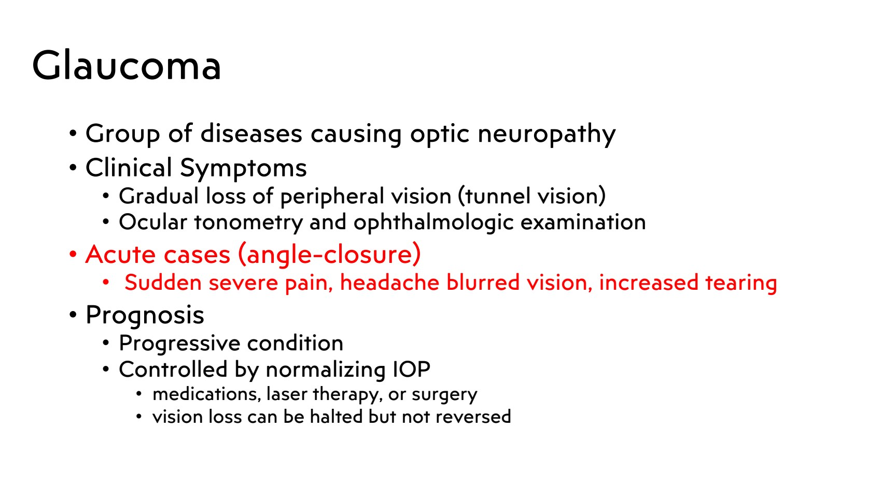
Extracted text
Glaucoma
• Group of diseases causing optic neuropathy
• Clinical Symptoms
• Gradual loss of peripheral vision (tunnel vision)
• Ocular tonometry and ophthalmologic examination
• Acute cases (angle-closure)
• Sudden severe pain, headache blurred vision, increased tearing
• Prognosis
• Progressive condition
• Controlled by normalizing IOP
• medications, laser therapy, or surgery
• vision loss can be halted but not reversed
Visual disorders · original slide 10
Q040, Q041
Show original slide (full image and credits)
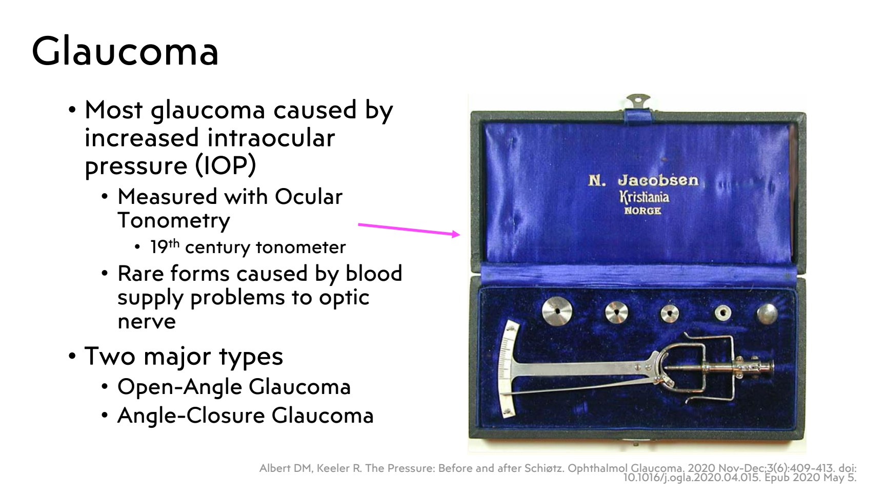
Extracted text
Glaucoma
• Most glaucoma caused by
increased intraocular
pressure (IOP)
• Measured with Ocular
Tonometry
• 19th century tonometer
• Rare forms caused by blood
supply problems to optic
nerve
• Two major types
• Open-Angle Glaucoma
• Angle-Closure Glaucoma
Albert DM, Keeler R. The Pressure: Before and after Schiøtz. Ophthalmol Glaucoma. 2020 Nov-Dec;3(6):409-413. doi:
10.1016/j.ogla.2020.04.015. Epub 2020 May 5.
Visual disorders · original slide 11
Q023, Q038, Q039
Show original slide (full image and credits)
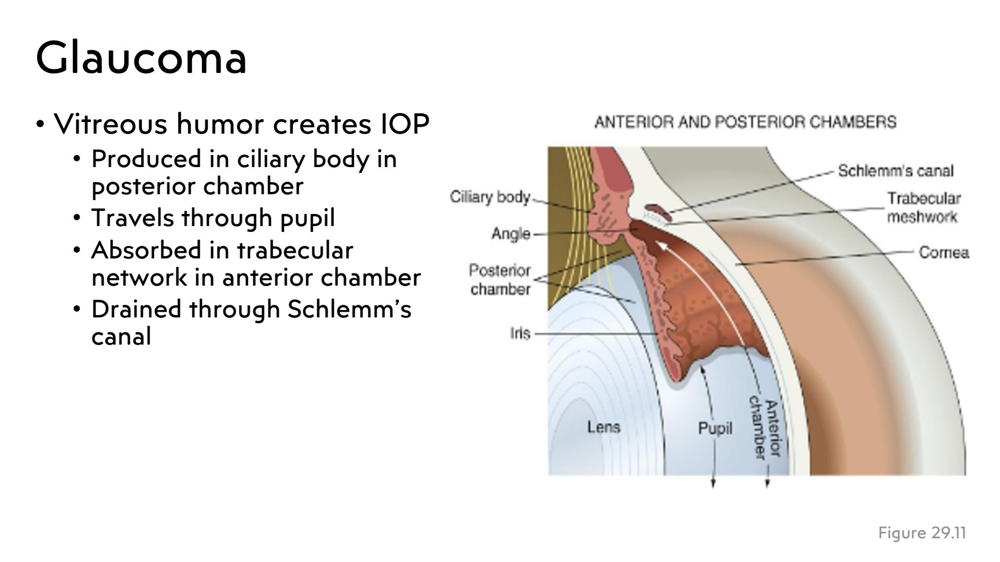
Extracted text
Glaucoma
• Vitreous humor creates IOP
• Produced in ciliary body in
posterior chamber
• Travels through pupil
• Absorbed in trabecular
network in anterior chamber
• Drained through Schlemm’s
canal
Figure 29.11
Visual disorders · original slide 12
Q005, Q023, Q043, Q273
Show original slide (full image and credits)
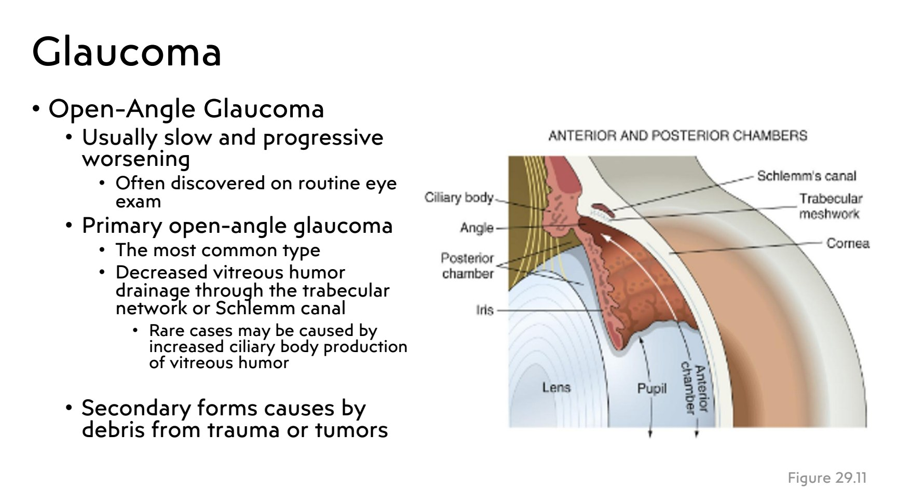
Extracted text
Glaucoma • Open-Angle Glaucoma • Usually slow and progressive
worsening • Often discovered on routine eye
exam
• Primary open
-angle glaucoma
• The most common type • Decreased vitreous humor
drainage through the trabecular
network or Schlemm canal • Rare cases may be caused by
increased ciliary body production
of vitreous humor
• Secondary forms causes by
debris from trauma or tumors
Figure 29.11
Visual disorders · original slide 13
Q006, Q024
Show original slide (full image and credits)
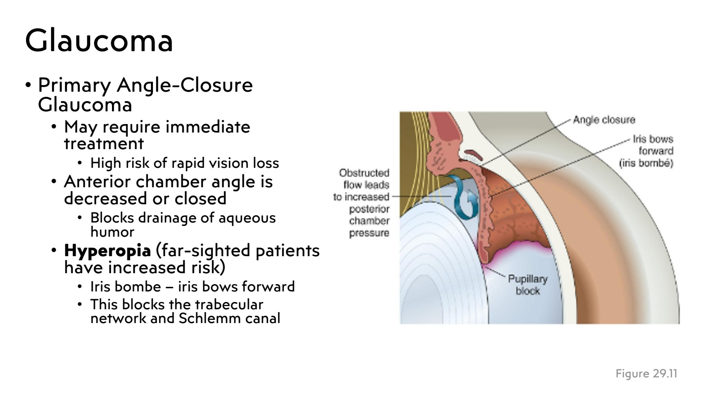
Extracted text
Glaucoma • Primary Angle
-Closure
Glaucoma • May require immediate
treatment • High risk of rapid vision loss
• Anterior chamber angle is
decreased or closed • Blocks drainage of aqueous
humor
• Hyperopia (far
-sighted patients
have increased risk) • Iris bombe – iris bows forward • This blocks the trabecular
network and Schlemm canal
Figure 29.11
Visual disorders · original slide 14
Q025
Show original slide (full image and credits)
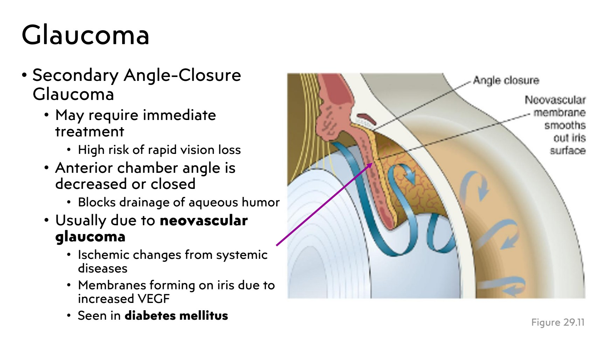
Extracted text
Glaucoma • Secondary Angle
-Closure
Glaucoma • May require immediate
treatment • High risk of rapid vision loss
• Anterior chamber angle is
decreased or closed • Blocks drainage of aqueous humor
• Usually due to neovascular
glaucoma • Ischemic changes from systemic
diseases
• Membranes forming on iris due to
increased VEGF
• Seen in diabetes mellitus Figure 29.11
Visual disorders · original slide 15
Q026, Q273
Show original slide (full image and credits)
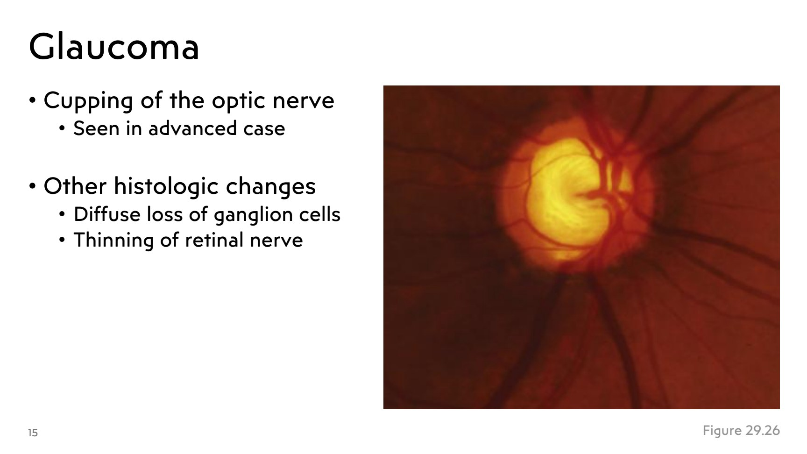
Extracted text
Glaucoma
• Cupping of the optic nerve
• Seen in advanced case
• Other histologic changes
• Diffuse loss of ganglion cells
• Thinning of retinal nerve
15 Figure 29.26
Visual disorders · original slide 16
Q026, Q041, Q273
Show original slide (full image and credits)
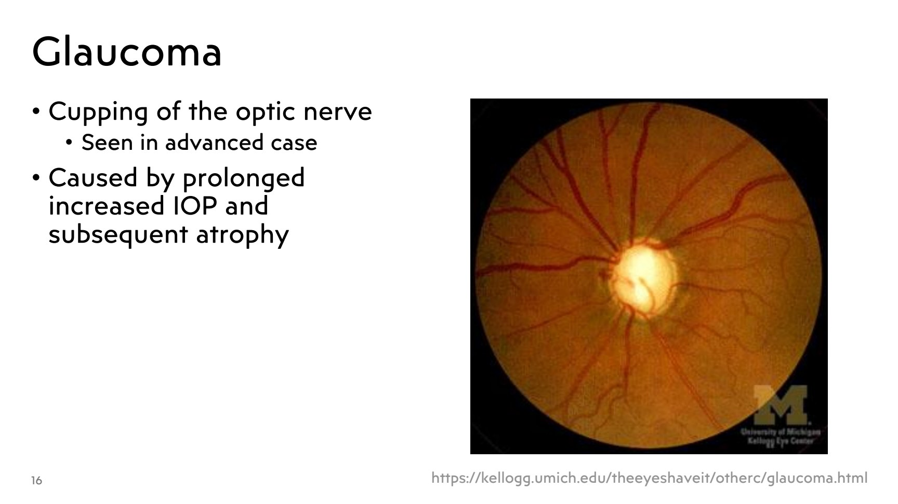
Extracted text
Glaucoma
• Cupping of the optic nerve
• Seen in advanced case
• Caused by prolonged
increased IOP and
subsequent atrophy
16 https://kellogg.umich.edu/theeyeshaveit/otherc/glaucoma.html
Visual disorders · original slide 17
Q026
Show original slide (full image and credits)
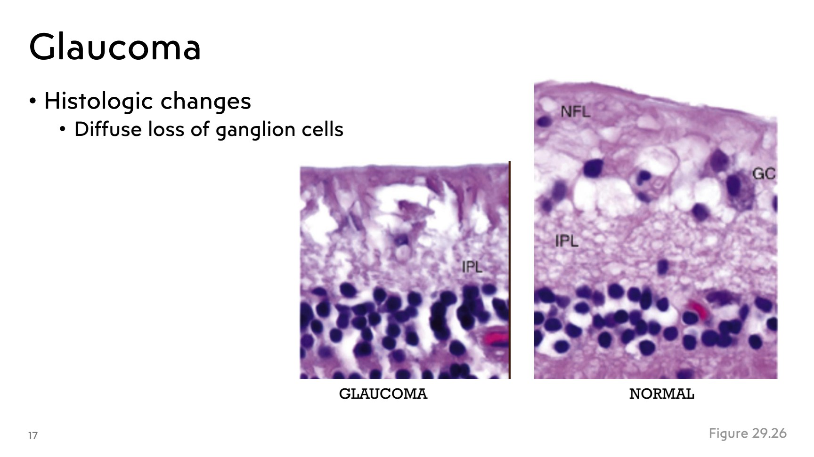
Extracted text
Glaucoma
• Histologic changes
• Diffuse loss of ganglion cells
17 Figure 29.26
GLAUCOMA NORMAL
Visual disorders · original slide 18
Q026
Show original slide (full image and credits)
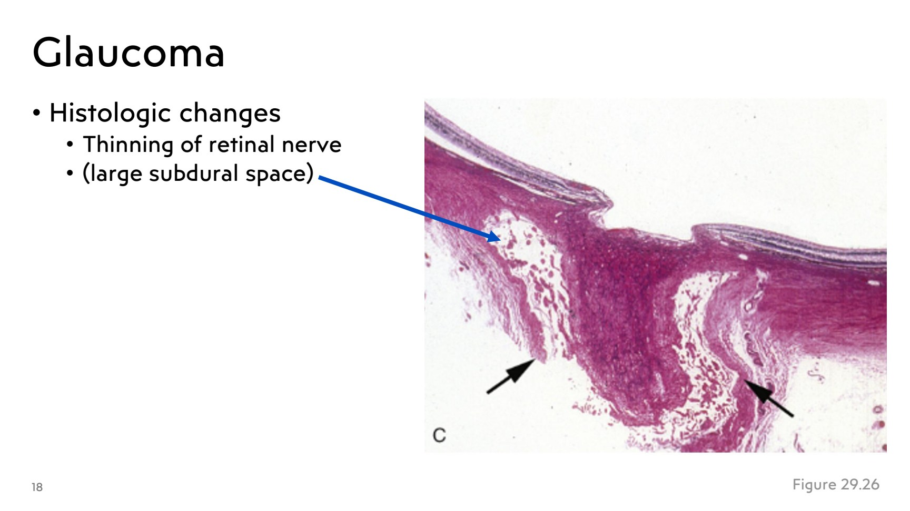
Extracted text
Glaucoma
• Histologic changes
• Thinning of retinal nerve
• (large subdural space)
18 Figure 29.26
Visual disorders · original slide 19
Q025, Q043, Q044
Show original slide (full image and credits)
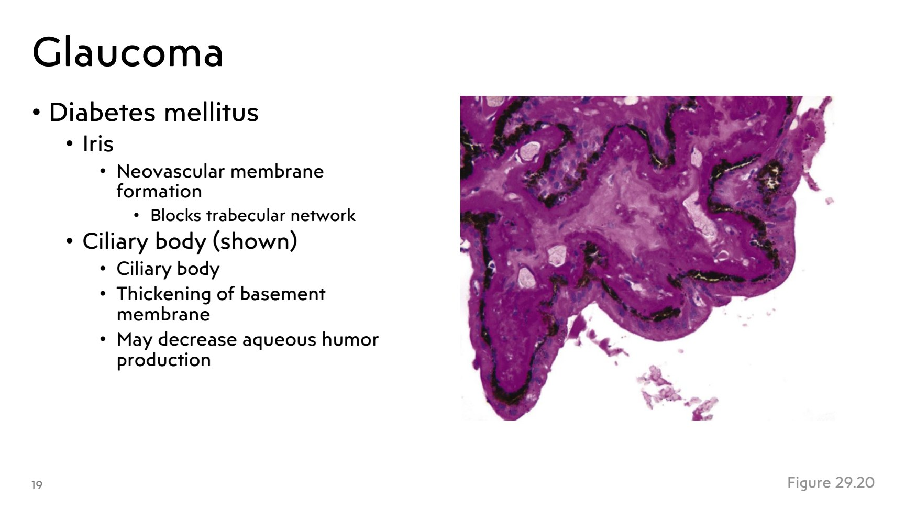
Extracted text
Glaucoma
• Diabetes mellitus
• Iris
• Neovascular membrane
formation
• Blocks trabecular network
• Ciliary body (shown)
• Ciliary body
• Thickening of basement
membrane
• May decrease aqueous humor
production
19 Figure 29.20
Visual disorders · original slide 20
Q007, Q019, Q020
Show original slide (full image and credits)
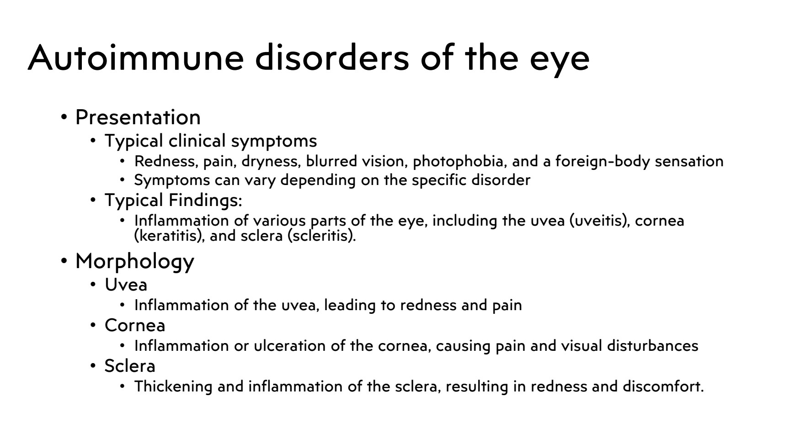
Extracted text
Autoimmune disorders of the eye
• Presentation
• Typical clinical symptoms
• Redness, pain, dryness, blurred vision, photophobia, and a foreign-body sensation
• Symptoms can vary depending on the specific disorder
• Typical Findings:
• Inflammation of various parts of the eye, including the uvea (uveitis), cornea
(keratitis), and sclera (scleritis).
• Morphology
• Uvea
• Inflammation of the uvea, leading to redness and pain
• Cornea
• Inflammation or ulceration of the cornea, causing pain and visual disturbances
• Sclera
• Thickening and inflammation of the sclera, resulting in redness and discomfort.
Visual disorders · original slide 21
Q045, Q046, Q047
Show original slide (full image and credits)
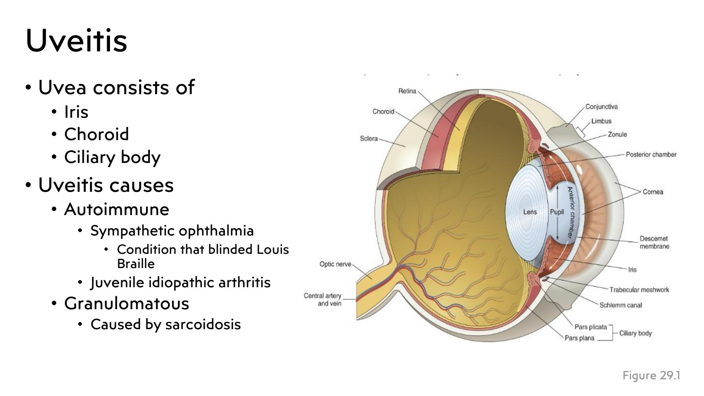
Extracted text
Uveitis • Uvea consists of • Iris • Choroid • Ciliary body • Uveitis causes • Autoimmune • Sympathetic ophthalmia • Condition that blinded Louis
Braille
• Juvenile idiopathic arthritis
• Granulomatous • Caused by sarcoidosis
Figure 29.1
Visual disorders · original slide 22
Q007, Q027, Q047
Show original slide (full image and credits)
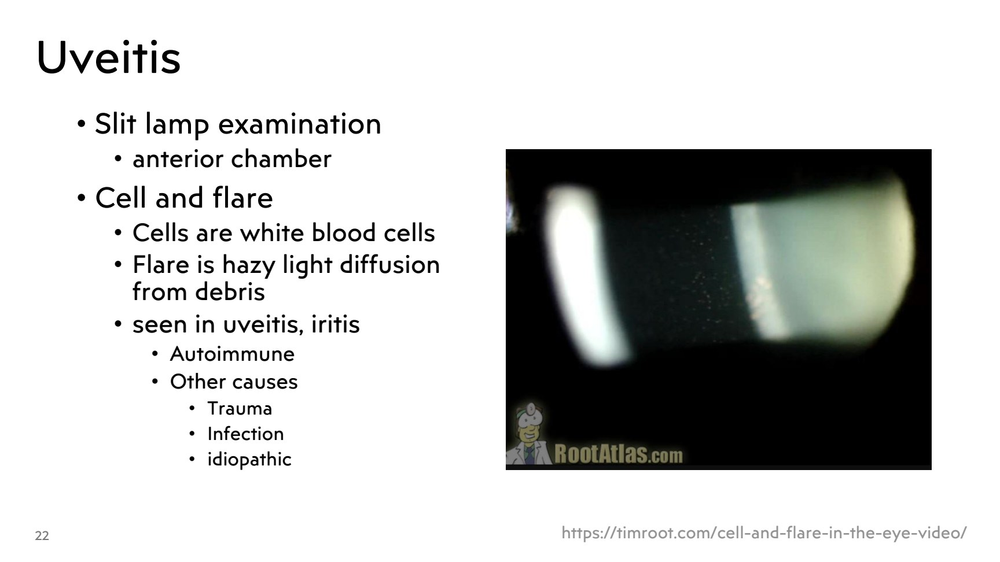
Extracted text
Uveitis
• Slit lamp examination
• anterior chamber
• Cell and flare
• Cells are white blood cells
• Flare is hazy light diffusion
from debris
• seen in uveitis, iritis
• Autoimmune
• Other causes
• Trauma
• Infection
• idiopathic
22 https://timroot.com/cell-and-flare-in-the-eye-video/
Visual disorders · original slide 23
Q008, Q048, Q274
Show original slide (full image and credits)
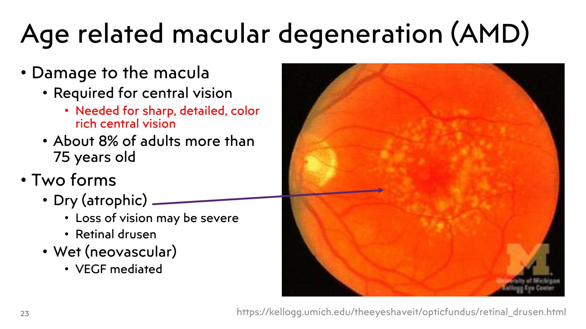
Extracted text
Age related macular degeneration (AMD)
• Damage to the macula
• Required for central vision
• Needed for sharp, detailed, color
rich central vision
• About 8% of adults more than
75 years old
• Two forms
• Dry (atrophic)
• Loss of vision may be severe
• Retinal drusen
• Wet (neovascular)
• VEGF mediated
23 https://kellogg.umich.edu/theeyeshaveit/opticfundus/retinal_drusen.html
Visual disorders · original slide 24
Q008, Q028, Q048, Q274
Show original slide (full image and credits)
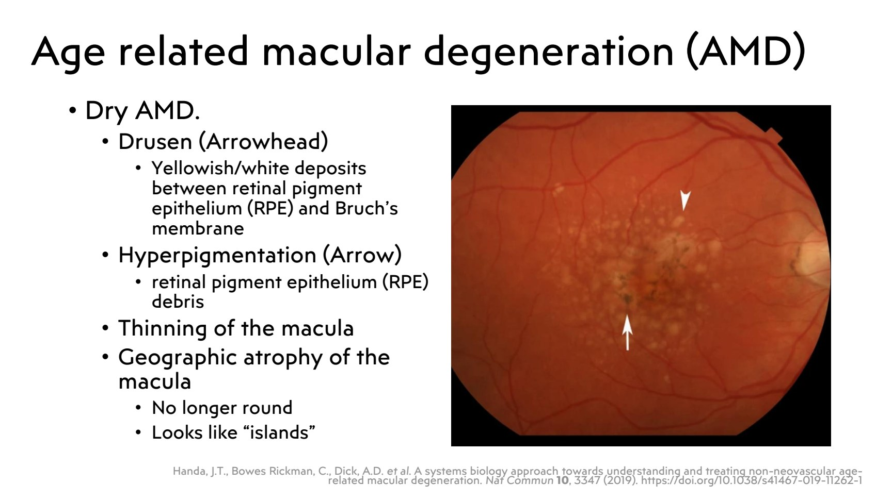
Extracted text
Age related macular degeneration (AMD)
• Dry AMD.
• Drusen (Arrowhead)
• Yellowish/white deposits
between retinal pigment
epithelium (RPE) and Bruch’s
membrane
• Hyperpigmentation (Arrow)
• retinal pigment epithelium (RPE)
debris
• Thinning of the macula
• Geographic atrophy of the
macula
• No longer round
• Looks like “islands”
Handa, J.T., Bowes Rickman, C., Dick, A.D. et al. A systems biology approach towards understanding and treating non-neovascular agerelated macular degeneration. Nat Commun 10, 3347 (2019). https://doi.org/10.1038/s41467-019-11262-1
Visual disorders · original slide 25
Q009, Q029, Q050, Q275
Show original slide (full image and credits)
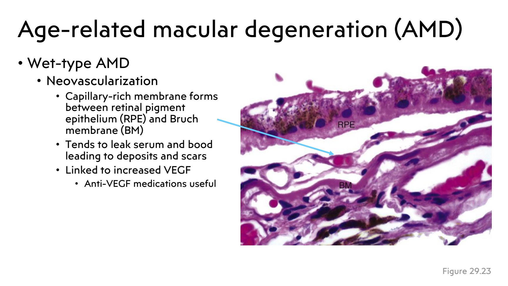
Extracted text
Age-related macular degeneration (AMD)
• Wet-type AMD
• Neovascularization
• Capillary-rich membrane forms
between retinal pigment
epithelium (RPE) and Bruch
membrane (BM)
• Tends to leak serum and bood
leading to deposits and scars
• Linked to increased VEGF
• Anti-VEGF medications useful
Figure 29.23
Visual disorders · original slide 26
Q009, Q029, Q050, Q275
Show original slide (full image and credits)
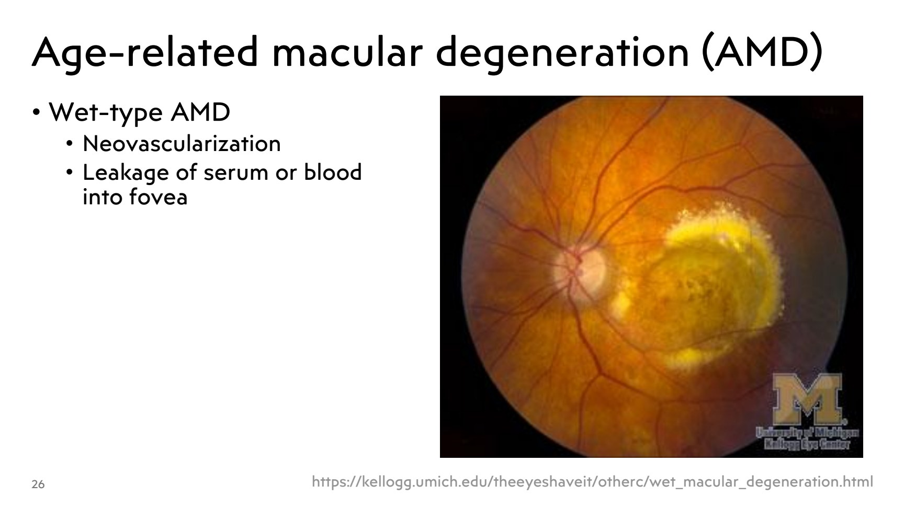
Extracted text
Age-related macular degeneration (AMD)
• Wet-type AMD
• Neovascularization
• Leakage of serum or blood
into fovea
26 https://kellogg.umich.edu/theeyeshaveit/otherc/wet_macular_degeneration.html
Visual disorders · original slide 27
Q048, Q049, Q050, Q274, Q275
Show original slide (full image and credits)
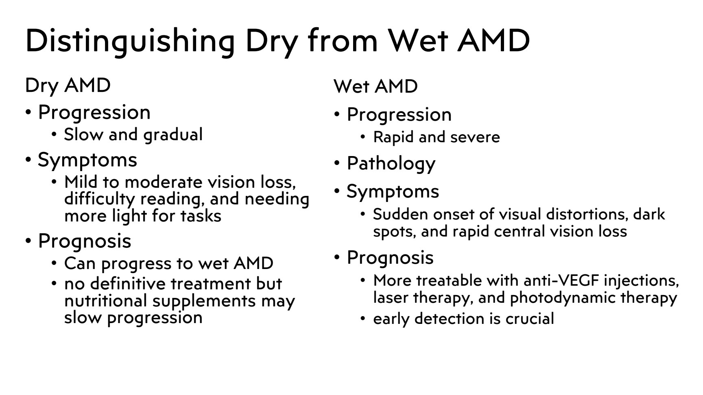
Extracted text
Distinguishing Dry from Wet AMD
Dry AMD
• Progression
• Slow and gradual
• Symptoms
• Mild to moderate vision loss,
difficulty reading, and needing
more light for tasks
• Prognosis
• Can progress to wet AMD
• no definitive treatment but
nutritional supplements may
slow progression
Wet AMD
• Progression
• Rapid and severe
• Pathology
• Symptoms
• Sudden onset of visual distortions, dark
spots, and rapid central vision loss
• Prognosis
• More treatable with anti-VEGF injections,
laser therapy, and photodynamic therapy
• early detection is crucial
Visual disorders · original slide 28
Q010, Q276
Show original slide (full image and credits)
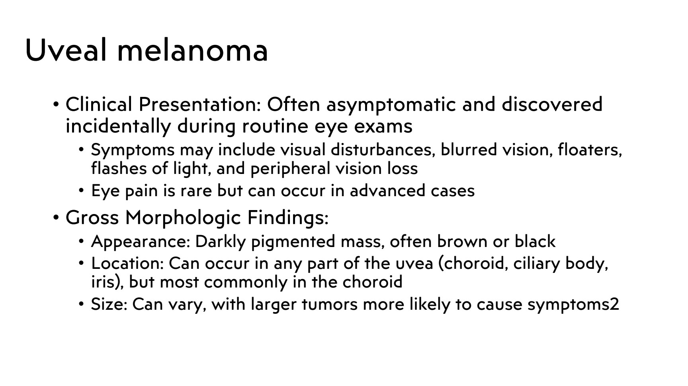
Extracted text
Uveal melanoma
• Clinical Presentation: Often asymptomatic and discovered
incidentally during routine eye exams
• Symptoms may include visual disturbances, blurred vision, floaters,
flashes of light, and peripheral vision loss
• Eye pain is rare but can occur in advanced cases
• Gross Morphologic Findings:
• Appearance: Darkly pigmented mass, often brown or black
• Location: Can occur in any part of the uvea (choroid, ciliary body,
iris), but most commonly in the choroid
• Size: Can vary, with larger tumors more likely to cause symptoms2
Visual disorders · original slide 29
Q051, Q054, Q055, Q276
Show original slide (full image and credits)
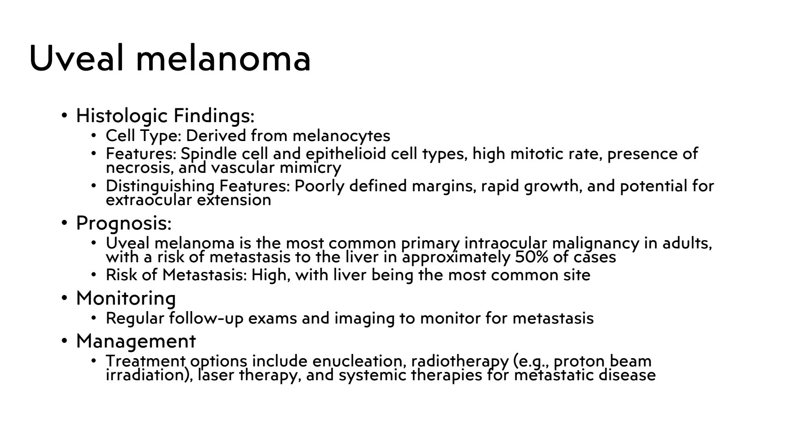
Extracted text
Uveal melanoma
• Histologic Findings:
• Cell Type: Derived from melanocytes
• Features: Spindle cell and epithelioid cell types, high mitotic rate, presence of
necrosis, and vascular mimicry
• Distinguishing Features: Poorly defined margins, rapid growth, and potential for
extraocular extension
• Prognosis:
• Uveal melanoma is the most common primary intraocular malignancy in adults,
with a risk of metastasis to the liver in approximately 50% of cases
• Risk of Metastasis: High, with liver being the most common site
• Monitoring
• Regular follow-up exams and imaging to monitor for metastasis
• Management
• Treatment options include enucleation, radiotherapy (e.g., proton beam
irradiation), laser therapy, and systemic therapies for metastatic disease
Visual disorders · original slide 30
Q010, Q051, Q276
Show original slide (full image and credits)
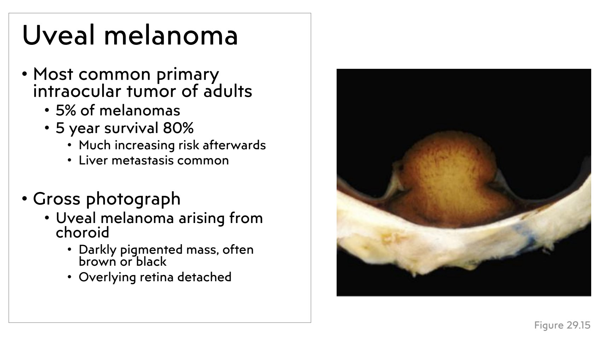
Extracted text
Uveal melanoma • Most common primary
intraocular tumor of adults • 5% of melanomas • 5 year survival 80% • Much increasing risk afterwards • Liver metastasis common
• Gross photograph • Uveal melanoma arising from
choroid • Darkly pigmented mass, often
brown or black
• Overlying retina detached
Figure 29.15
Visual disorders · original slide 31
Q052, Q276
Show original slide (full image and credits)
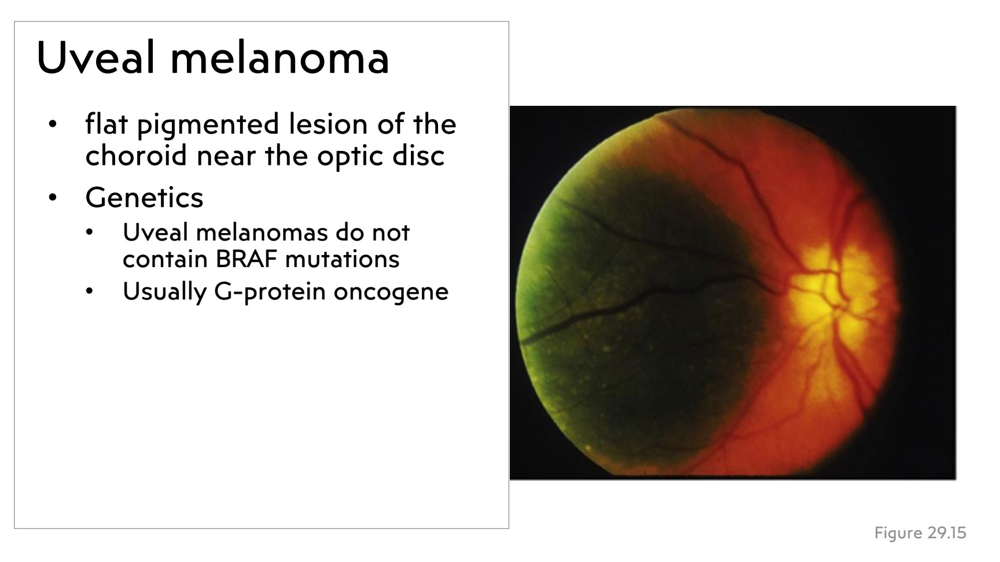
Extracted text
Uveal melanoma
• flat pigmented lesion of the
choroid near the optic disc
• Genetics
• Uveal melanomas do not
contain BRAF mutations
• Usually G-protein oncogene
Figure 29.15
Visual disorders · original slide 32
Q053, Q276
Show original slide (full image and credits)
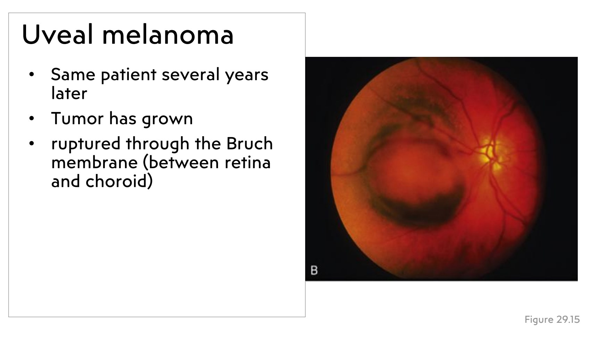
Extracted text
Uveal melanoma
• Same patient several years
later
• Tumor has grown
• ruptured through the Bruch
membrane (between retina
and choroid)
Figure 29.15
Visual disorders · original slide 33
Q054, Q276
Show original slide (full image and credits)
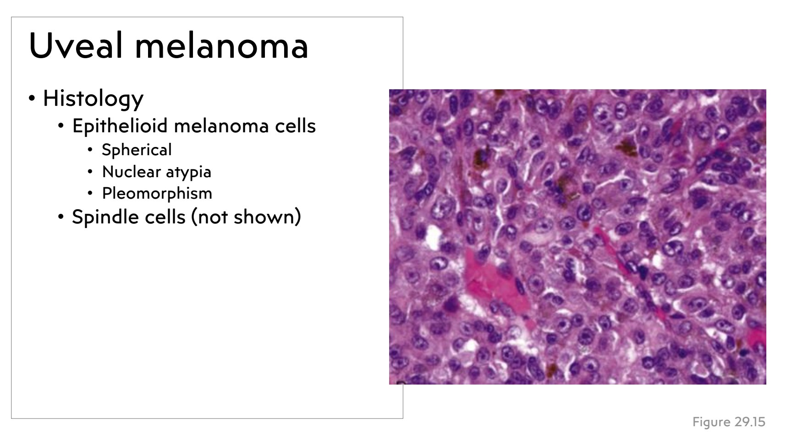
Extracted text
Uveal melanoma
• Histology
• Epithelioid melanoma cells
• Spherical
• Nuclear atypia
• Pleomorphism
• Spindle cells (not shown)
Figure 29.15
Visual disorders · original slide 34
Q011, Q056, Q277
Show original slide (full image and credits)
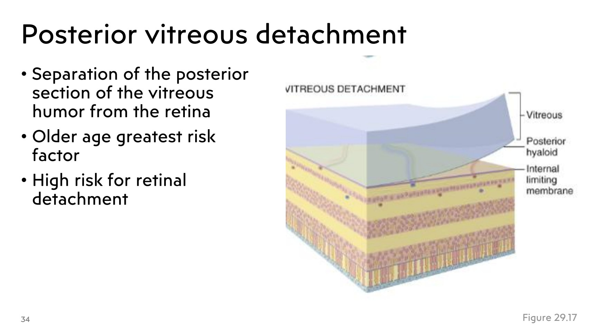
Extracted text
Posterior vitreous detachment
• Separation of the posterior
section of the vitreous
humor from the retina
• Older age greatest risk
factor
• High risk for retinal
detachment
34 Figure 29.17
Visual disorders · original slide 35
Q011, Q056, Q277
Show original slide (full image and credits)
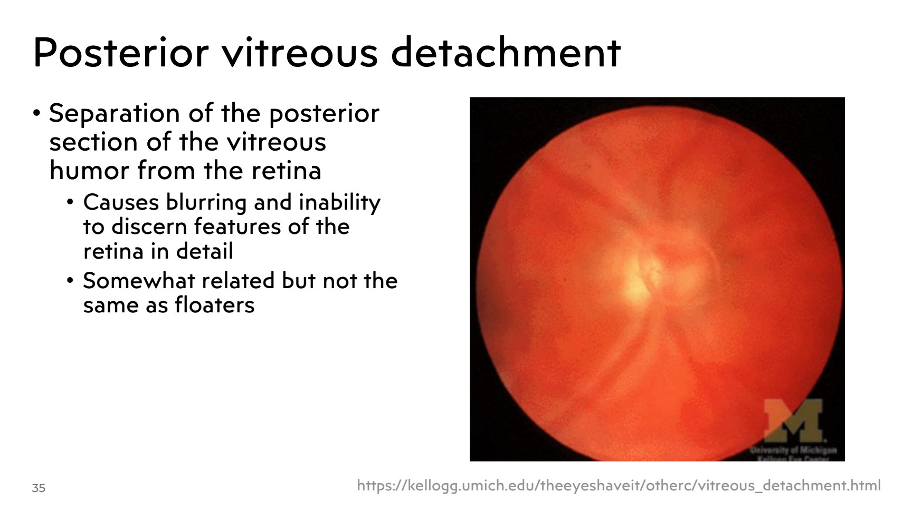
Extracted text
Posterior vitreous detachment
• Separation of the posterior
section of the vitreous
humor from the retina
• Causes blurring and inability
to discern features of the
retina in detail
• Somewhat related but not the
same as floaters
35 https://kellogg.umich.edu/theeyeshaveit/otherc/vitreous_detachment.html
Visual disorders · original slide 36
Q012, Q058, Q277
Show original slide (full image and credits)
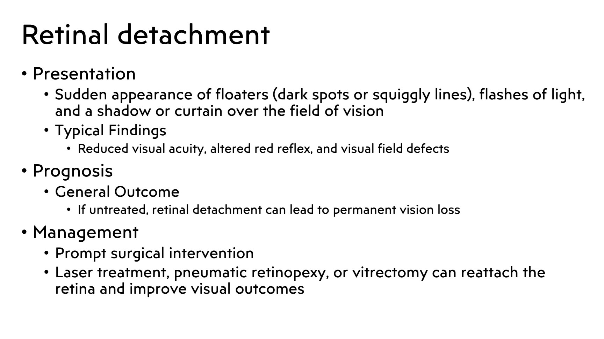
Extracted text
Retinal detachment
• Presentation
• Sudden appearance of floaters (dark spots or squiggly lines), flashes of light,
and a shadow or curtain over the field of vision
• Typical Findings
• Reduced visual acuity, altered red reflex, and visual field defects
• Prognosis
• General Outcome
• If untreated, retinal detachment can lead to permanent vision loss
• Management
• Prompt surgical intervention
• Laser treatment, pneumatic retinopexy, or vitrectomy can reattach the
retina and improve visual outcomes
Visual disorders · original slide 37
Q030, Q057
Show original slide (full image and credits)
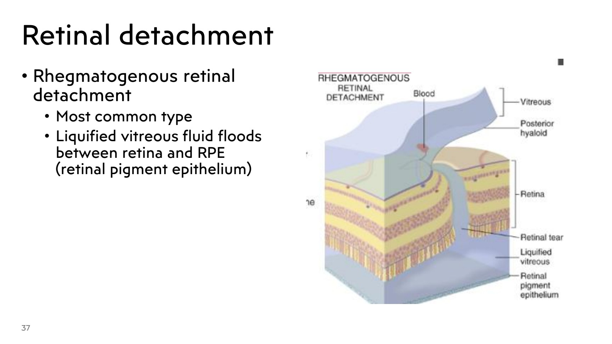
Extracted text
Retinal detachment
• Rhegmatogenous retinal
detachment
• Most common type
• Liquified vitreous fluid floods
between retina and RPE
(retinal pigment epithelium)
37
Visual disorders · original slide 38
Q057
Show original slide (full image and credits)
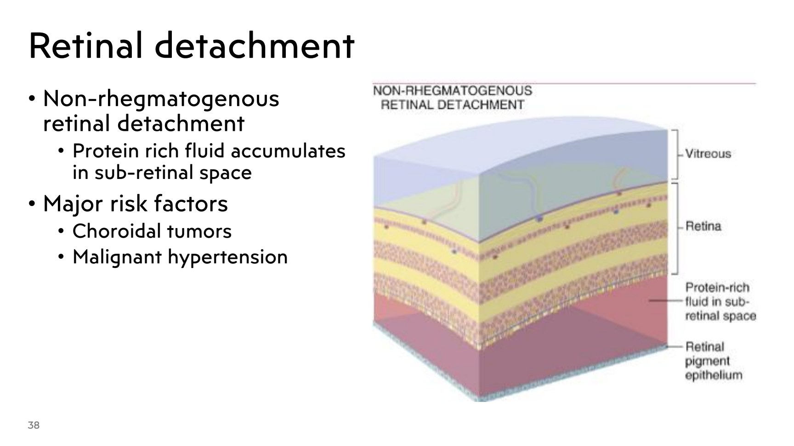
Extracted text
Retinal detachment
• Non-rhegmatogenous
retinal detachment
• Protein rich fluid accumulates
in sub-retinal space
• Major risk factors
• Choroidal tumors
• Malignant hypertension
38
Visual disorders · original slide 39
Q012, Q030, Q058, Q277
Show original slide (full image and credits)
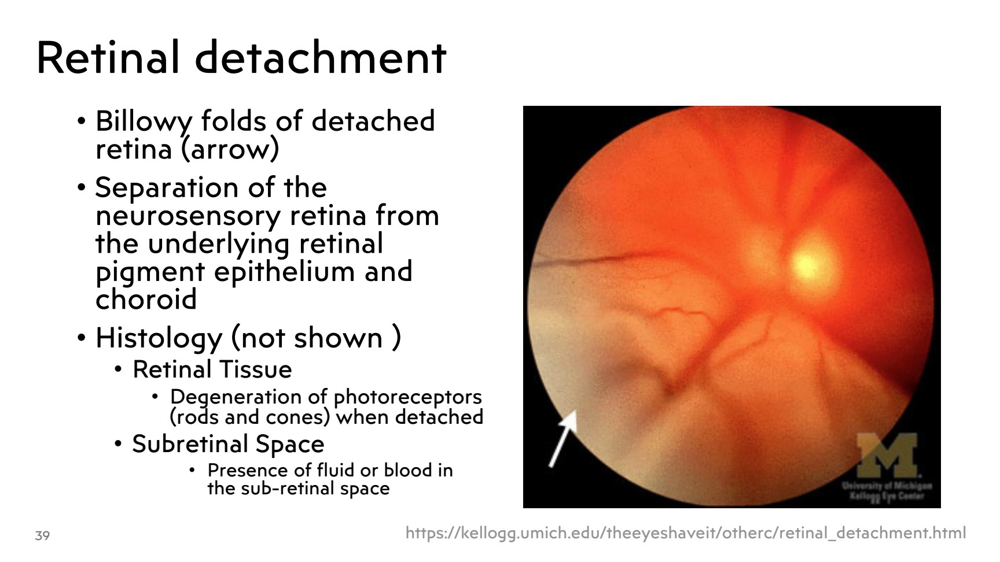
Extracted text
Retinal detachment
• Billowy folds of detached
retina (arrow)
• Separation of the
neurosensory retina from
the underlying retinal
pigment epithelium and
choroid
• Histology (not shown )
• Retinal Tissue
• Degeneration of photoreceptors
(rods and cones) when detached
• Subretinal Space
• Presence of fluid or blood in
the sub-retinal space
39 https://kellogg.umich.edu/theeyeshaveit/otherc/retinal_detachment.html
Visual disorders · original slide 40
Q013, Q278
Show original slide (full image and credits)
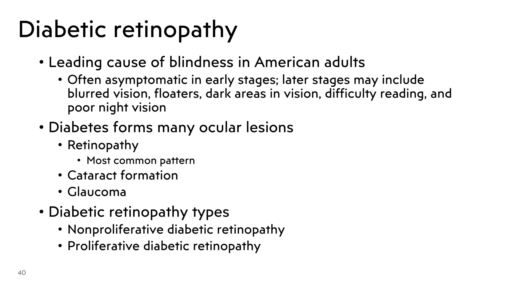
Extracted text
Diabetic retinopathy
• Leading cause of blindness in American adults
• Often asymptomatic in early stages; later stages may include
blurred vision, floaters, dark areas in vision, difficulty reading, and
poor night vision
• Diabetes forms many ocular lesions
• Retinopathy
• Most common pattern
• Cataract formation
• Glaucoma
• Diabetic retinopathy types
• Nonproliferative diabetic retinopathy
• Proliferative diabetic retinopathy
40
Visual disorders · original slide 41
Q013, Q031, Q059, Q060, Q278
Show original slide (full image and credits)
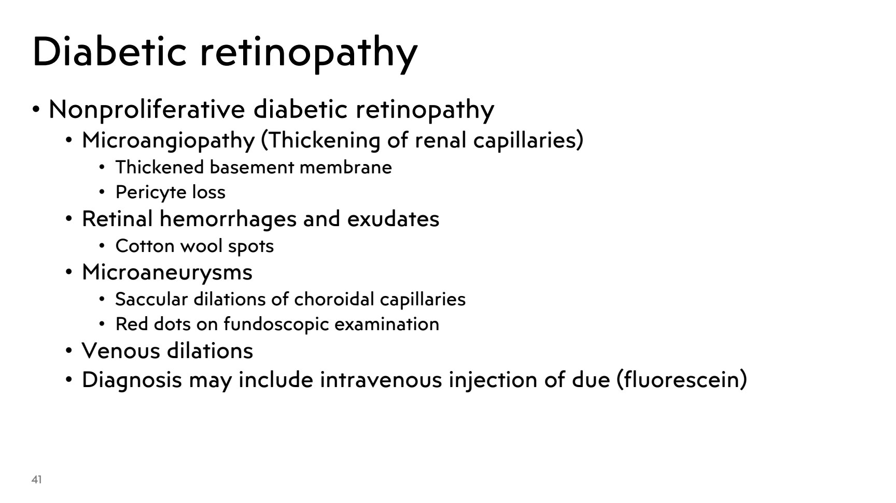
Extracted text
Diabetic retinopathy
• Nonproliferative diabetic retinopathy
• Microangiopathy (Thickening of renal capillaries)
• Thickened basement membrane
• Pericyte loss
• Retinal hemorrhages and exudates
• Cotton wool spots
• Microaneurysms
• Saccular dilations of choroidal capillaries
• Red dots on fundoscopic examination
• Venous dilations
• Diagnosis may include intravenous injection of due (fluorescein)
41
Visual disorders · original slide 42
Q059
Show original slide (full image and credits)
Extracted text
Diabetic retinopathy
• Cotton wool spots
• Seen in nonproliferative
diabetic retinopathy
• Caused by hemorrhage and
exudate in damaged vessels
• Also seen in other systemic
diseases that cause vascular
damage
• Hypertension
• More commonly seen with
HTN than with DM
• Lupus
42 https://kellogg.umich.edu/theeyeshaveit/opticfundus/cotton_wool.html
Visual disorders · original slide 43
Q014, Q032, Q061, Q278
Show original slide (full image and credits)
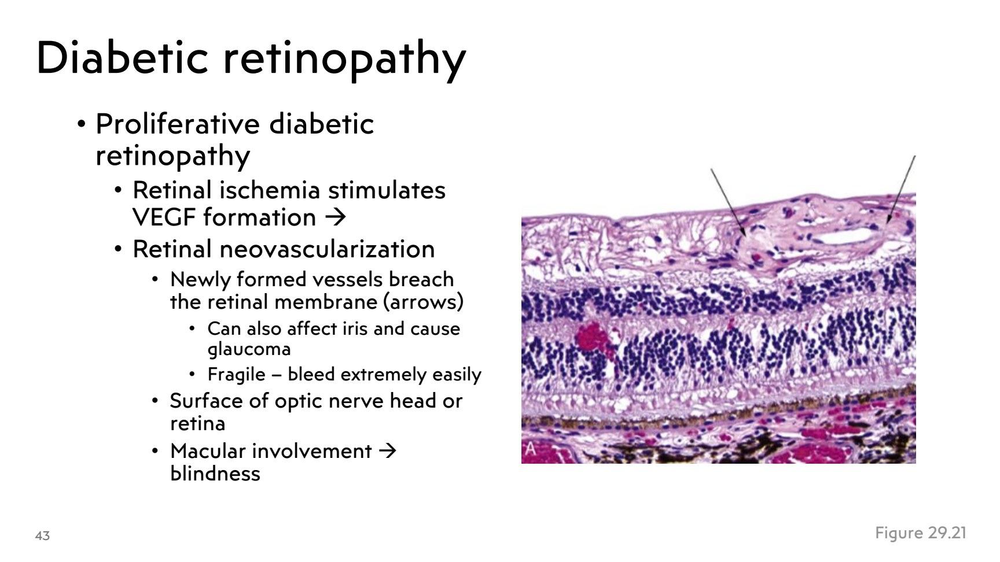
Extracted text
Diabetic retinopathy • Proliferative diabetic
retinopathy • Retinal ischemia stimulates
VEGF formation
→
• Retinal neovascularization • Newly formed vessels breach
the retinal membrane (arrows) • Can also affect iris and cause
glaucoma
• Fragile
– bleed extremely easily
• Surface of optic nerve head or
retina
• Macular involvement
→
blindness
43 Figure 29.21
Visual disorders · original slide 44
Q032, Q061, Q278
Show original slide (full image and credits)
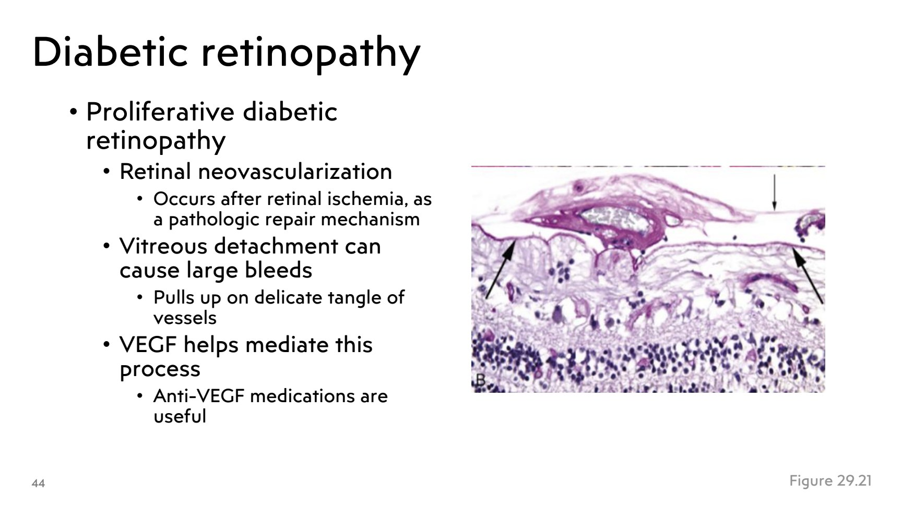
Extracted text
Diabetic retinopathy • Proliferative diabetic
retinopathy • Retinal neovascularization • Occurs after retinal ischemia, as
a pathologic repair mechanism
• Vitreous detachment can
cause large bleeds • Pulls up on delicate tangle of
vessels
• VEGF helps mediate this
process • Anti-VEGF medications are
useful
44 Figure 29.21
Visual disorders · original slide 45
Q014, Q061, Q278
Show original slide (full image and credits)
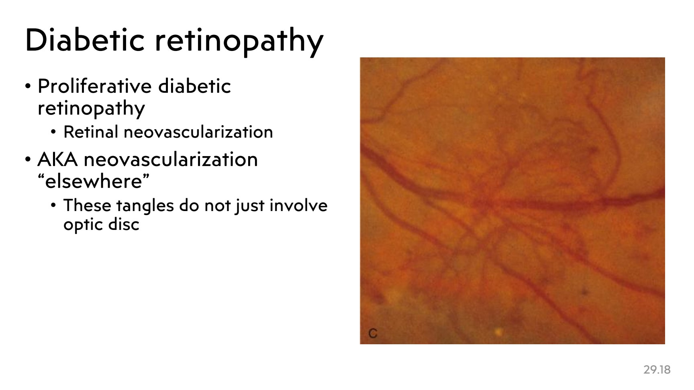
Extracted text
Diabetic retinopathy
• Proliferative diabetic
retinopathy
• Retinal neovascularization
• AKA neovascularization
“elsewhere”
• These tangles do not just involve
optic disc
29.18
Visual disorders · original slide 46
Q015, Q033
Show original slide (full image and credits)
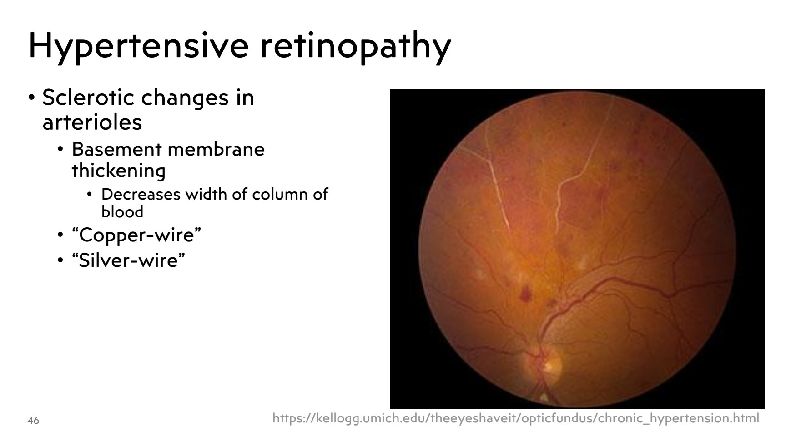
Extracted text
Hypertensive retinopathy
• Sclerotic changes in
arterioles
• Basement membrane
thickening
• Decreases width of column of
blood
• “Copper-wire”
• “Silver-wire”
46 https://kellogg.umich.edu/theeyeshaveit/opticfundus/chronic_hypertension.html
Visual disorders · original slide 47
Q015, Q033, Q062
Show original slide (full image and credits)
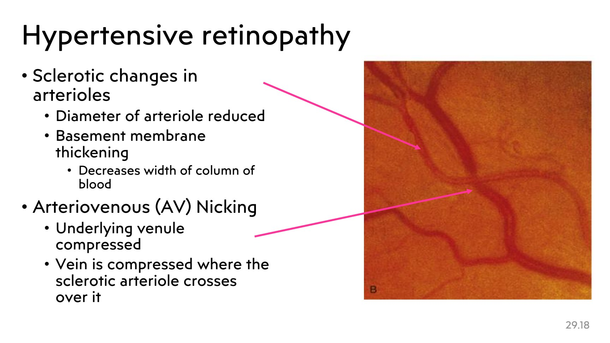
Extracted text
Hypertensive retinopathy • Sclerotic changes in
arterioles • Diameter of arteriole reduced • Basement membrane
thickening • Decreases width of column of
blood
• Arteriovenous (AV) Nicking • Underlying venule
compressed
• Vein is compressed where the
sclerotic arteriole crosses
over it
29.18
Visual disorders · original slide 48
Q059
Show original slide (full image and credits)
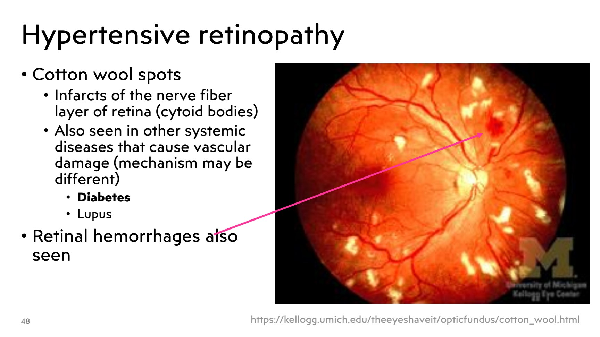
Extracted text
Hypertensive retinopathy
• Cotton wool spots
• Infarcts of the nerve fiber
layer of retina (cytoid bodies)
• Also seen in other systemic
diseases that cause vascular
damage (mechanism may be
different)
• Diabetes
• Lupus
• Retinal hemorrhages also
seen
48 https://kellogg.umich.edu/theeyeshaveit/opticfundus/cotton_wool.html
Visual disorders · original slide 49
Q033, Q059
Show original slide (full image and credits)
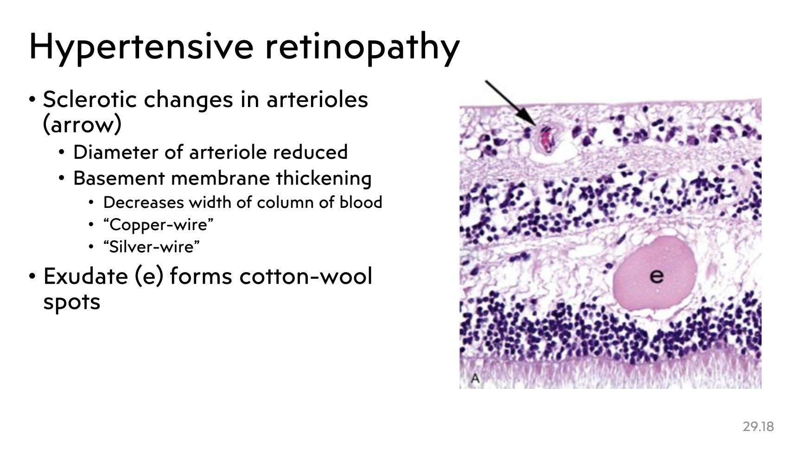
Extracted text
Hypertensive retinopathy
• Sclerotic changes in arterioles
(arrow)
• Diameter of arteriole reduced
• Basement membrane thickening
• Decreases width of column of blood
• “Copper-wire”
• “Silver-wire”
• Exudate (e) forms cotton-wool
spots
29.18
Visual disorders · original slide 50
Q063, Q279
Show original slide (full image and credits)
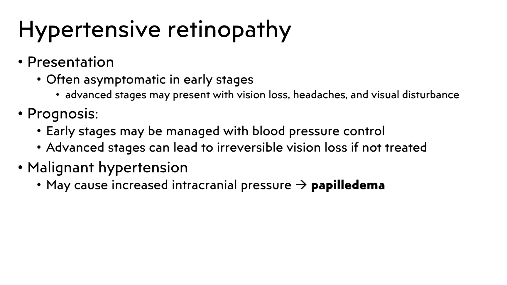
Extracted text
Hypertensive retinopathy
• Presentation
• Often asymptomatic in early stages
• advanced stages may present with vision loss, headaches, and visual disturbance
• Prognosis:
• Early stages may be managed with blood pressure control
• Advanced stages can lead to irreversible vision loss if not treated
• Malignant hypertension
• May cause increased intracranial pressure → papilledema
Visual disorders · original slide 51
Q016, Q034, Q063, Q279
Show original slide (full image and credits)
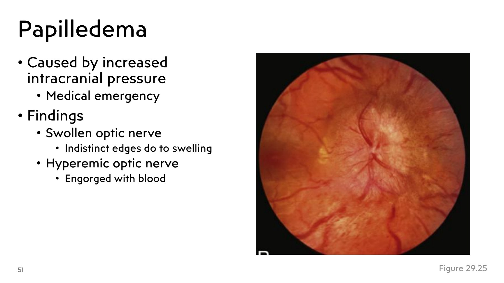
Extracted text
Papilledema • Caused by increased
intracranial pressure • Medical emergency
• Findings • Swollen optic nerve • Indistinct edges do to swelling • Hyperemic optic nerve • Engorged with blood
51 Figure 29.25
Visual disorders · original slide 52
Q016, Q063, Q064, Q279
Show original slide (full image and credits)
Extracted text
Papilledema • Non-hypertensive causes
(most common) • Causes • Idiopathic Intracranial
Hypertension
• Brain tumor or cyst • Stroke
• Often treated with mannitol
• Malignant hypertension caused • Treatment • Nicardipine (fast acting calcium
channel blocker)
• Labetalol (fast acting beta
blocker)
52 Figure 29.25
Visual disorders · original slide 53
Q017, Q280
Show original slide (full image and credits)
Extracted text
Retinoblastoma
• Leukocoria
• white reflection from the retina –
often in photos
• Can be yellowish-white or off-white
• Sometimes called “white reflex”
• strabismus
• (misalignment of the eye)
• Poor vision in affected eyes
• High cure rate if intraocular
53
Zanaty, Mario, Barros, Guilherme, Chalouhi, Nohra, Starke, Robert M., Manasseh, Philip, Tjoumakaris, Stavropoula I., Shields, Carol L., Hasan, David, Bulsara, Ketan, Rosenwasser, Robert
H., Jabbour, Pascal, Update on Intra-Arterial Chemotherapy for Retinoblastoma, The Scientific World Journal, 2014, 869604, 6 pages, 2014.
Visual disorders · original slide 54
Q017, Q067, Q280
Show original slide (full image and credits)
Extracted text
Retinoblastoma
• Presents in young children
• Usually less than 5 years old
• Older children may have slow growing, missed
tumor
• Morphology
• White, cream-like mass
• Endophytic (grows into the vitreous)
• Exophytic (grows into subretinal space)
• Can fill entire globe
Figure 29.24
Visual disorders · original slide 55
Q065, Q066, Q280
Show original slide (full image and credits)
Extracted text
Retinoblastoma • Tumor suppressor: RB The Governor of
Proliferation • Prevents out of control DNA
transcription
• Sporadic form • Effects one eye with no
additional cancer risk
• 60% of case
• Familial form • 10,000 times risk of
developing RB (both eyes) and
other cancers
• 40% of retinoblastoma is familial
autosomal dominant
Figure 7.25
REVIEW
Visual disorders · original slide 56
Q068, Q280
Show original slide (full image and credits)
Extracted text
Retinoblastoma • Small, round blue cells • Flexner-Wintersteiner rosettes • (white arrow) • Arrangements of a single layer of
neoplastic cells around a
pseudolumen
• Dystrophic calcification • (black arrow) • Tumor cells surround blood
vessels
Figure 29.24
Visual disorders · original slide 57
Q018, Q069
Show original slide (full image and credits)
Extracted text
Cherry-red spot
• Storage diseases
• Tay-sachs disease
• Nieman-Pick disease
• Excess storage material
causes discoloration
• Note:
• Similar lesion can be seen
with total occlusion of central
retinal artery
57 Figure 29.22
Visual disorders · original slide 58
Title, objectives, divider, or closing page.
Show original slide (full image and credits)
Extracted text
Questions
Visual disorders · original slide 59
Q001, Q021, Q271
Show original slide (full image and credits)
Extracted text
Orbit
• What structures are these?
• The clinical condition of the
protruding eye is called?
• What underlying condition
causes this?
• What two substances are
associated with the
extraocular muscle
enlargement?
59
Figure 29.2
Visual disorders · original slide 60
Q003, Q035, Q037, Q272
Show original slide (full image and credits)
Extracted text
Anterior segment
• What is this?
• What structure of the eye is
affected?
• What age do most of these
appear?
• What systemic diseases are
associated?
• What is the typical
treatment?
60
https://www.aao.org/eye-health/diseases/what-are-cataracts
Visual disorders · original slide 61
Q023, Q038, Q039
Show original slide (full image and credits)
Extracted text
Anterior segment
• Where structure produces
aqueous humor and which
chamber is it in?
• What two structures are
involved in removal of
aqueous humor and which
chamber are they in?
• What is the name of the
group of diseases associated
with increased intraocular
pressure?
• What are the mechanisms of
the 2 major forms?
61
Figure 29.11
Visual disorders · original slide 62
Q026, Q273
Show original slide (full image and credits)
Extracted text
Optic nerve
• What structure is this?
• This is not normal
appearance fundoscopically,
what is this condition called?
• What causes this condition?
• What underlying eye
condition caused this?
62
Figure 29.26
Visual disorders · original slide 63
Q007, Q027
Show original slide (full image and credits)
Extracted text
Anterior chamber
• This examination technique
is called what?
• What are the particulates
called?
• What is the glowing called?
• Name two common nonsurgical ocular conditions
associated with this finding?
• What underlying conditions
are associated with these?
63
https://timroot.com/cell-and-flare-in-the-eye-video/
Visual disorders · original slide 64
Q008, Q028, Q048, Q049, Q274
Show original slide (full image and credits)
Extracted text
Retina
• What is the arrowhead
pointing at?
• What is the arrow pointing
at?
• What condition is this?
• Is there a cure for this?
Handa, J.T., Bowes Rickman, C., Dick, A.D. et al. A systems biology approach towards understanding and treating non-neovascular agerelated macular degeneration. Nat Commun 10, 3347 (2019). https://doi.org/10.1038/s41467-019-11262-1
Visual disorders · original slide 65
Q009, Q029, Q050, Q275
Show original slide (full image and credits)
Extracted text
Retina
• What area of the retina is
this?
• What is all that yellowish
stuff?
• What condition is this
associated?
• Is there a treatment?
65
https://kellogg.umich.edu/theeyeshaveit/otherc/wet_macular_degeneration.html
Visual disorders · original slide 66
Q010, Q051, Q052, Q276
Show original slide (full image and credits)
Extracted text
Uvea
• What is this?
• Why is it pigmented?
• What gene mutation is not
present in this lesion, that is
often seen in its non-ocular
forms?
• What is the 5 year survival
rate?
66
Figure 29.15
Visual disorders · original slide 67
Q011, Q056, Q277
Show original slide (full image and credits)
Extracted text
Posterior chamber
• What pathology can be
causing this blurry image?
• What are major
risks/pathologies if this
condition is not treated?
67
https://kellogg.umich.edu/theeyeshaveit/otherc/vitreous_detachment.html
Visual disorders · original slide 68
Q012, Q030, Q277
Show original slide (full image and credits)
Extracted text
Posterior chamber and retina
• What is the arrow
highlighting?
• What is this disease
process?
• What is the most common
form?
68
https://kellogg.umich.edu/theeyeshaveit/otherc/retinal_detachment.html
Visual disorders · original slide 69
Q014, Q061, Q278
Show original slide (full image and credits)
Extracted text
Retina
• What is this lesion called?
• What causes it?
• What underlying condition is
usually present?
• Why is this a bad thing?
69
Figure 29.21
Visual disorders · original slide 70
Q059
Show original slide (full image and credits)
Extracted text
Retina
• What are these lesions
called?
• What is the underlying
ocular pathology causing
these?
• What are two important
systemic underlying
conditions associated with
these?
• What are these?
70
https://kellogg.umich.edu/theeyeshaveit/opticfundus/cotton_wool.html
Visual disorders · original slide 71
Q015, Q033
Show original slide (full image and credits)
Extracted text
Retina
• What is this called?
• What type of structure is
this?
• What histopathology causes
this?
• What is the underlying
disease process?
71
https://kellogg.umich.edu/theeyeshaveit/opticfundus/chronic_hypertension.html
Visual disorders · original slide 72
Q015, Q062
Show original slide (full image and credits)
Extracted text
Retina • What structure is this? • What structure is this and
what is the name for it’s
pathologic change?
• What’s happening here? • What condition are these
findings associated with?
• In an emergency situation,
what medications should be
given?
72 Figure 29.18
Visual disorders · original slide 73
Q016, Q034, Q063, Q064, Q279
Show original slide (full image and credits)
Extracted text
Optic nerve
• What structure is this?
• Describe the pathologic
lesion to this structure?
• This condition is called?
• What is the underlying
cause?
• What is an important initial
treatment?
73
Figure 29.25
Visual disorders · original slide 74
Q017, Q066, Q280
Show original slide (full image and credits)
Extracted text
Retina
• What is this?
• In children, this finding is
most associated with what
disease?
• What gene mutation is this
associated with?
74
Zanaty, Mario, Barros, Guilherme, Chalouhi, Nohra, Starke, Robert M., Manasseh, Philip, Tjoumakaris, Stavropoula I., Shields, Carol L., Hasan, David, Bulsara, Ketan, Rosenwasser, Robert
H., Jabbour, Pascal, Update on Intra-Arterial Chemotherapy for Retinoblastoma, The Scientific World Journal, 2014, 869604, 6 pages, 2014. https://doi.org/10.1155/2014/869604
Visual disorders · original slide 75
Q069
Show original slide (full image and credits)
Extracted text
Retina
• What is this lesion called?
• What is it composed of?
• What is the underlying
disease?
75
Figure 29.22
Demyelinating diseases
Original PDF: Demyelinating Diseases.pdf
| Slide | Source title | Practice |
|---|
| 1 | Demyelinating Diseases | Administrative page retained |
| 2 | Objectives | Administrative page retained |
| 3 | Neural Autoimmunity | Q091, Q092 |
| 4 | Immune Pathophysiology | Q093, Q094, Q095 |
| 5 | Neuroimmunology Labs | Q092, Q103 |
| 6 | MS Pathophysiology | Q070, Q093, Q101 |
| 7 | GBS Pathophysiology | Q096, Q097, Q102, Q246 |
| 8 | (CIDP Pathophysiology) | Q096 |
| 9 | (Nodo-Paranodopathies) | Q098, Q267, Q268 |
| 10 | Disease Courses & Disability | Q070, Q071, Q104, Q105 |
| 11 | AQP4+NMOSD v MOGAD vs MS | Q070, Q071, Q072, Q073, Q075, Q076, Q281, Q282, Q283, Q284, Q285 |
| 12 | ON in AQP4+NMOSD v MOGAD v MS | Q072, Q106, Q107, Q108, Q281, Q282, Q283 |
| 13 | SC in AQP4+NMOSD v MOGAD v MS | Q075, Q109, Q110, Q111, Q284, Q285, Q286 |
| 14 | SC in AQP4+NMOSD v MOGAD v MS | Q075, Q109, Q110, Q111, Q284, Q285, Q286 |
| 15 | Brain in AQP4+NMOSD v MOGAD v MS | Q070, Q076, Q112, Q113, Q114, Q287, Q288, Q289 |
| 16 | Brain in AQP4+NMOSD v MOGAD v MS | Q070, Q076, Q112, Q113, Q114, Q287, Q288, Q289 |
| 17 | MS Risks Factors | Q116, Q117 |
| 18 | MS Criteria | Q070, Q118, Q119, Q120, Q283, Q286, Q289 |
| 19 | (AQP4+NMOSD) | Q071, Q074, Q094, Q103, Q113, Q281, Q284, Q287 |
| 20 | (MOGAD) | Q072, Q073, Q095, Q103, Q114, Q282, Q285, Q288 |
| 21 | MS Red Flags | Q077, Q115, Q127 |
| 22 | (MS Red Flags) | Q077, Q115, Q127, Q128 |
| 23 | (Red Flags) | Q077, Q115, Q127, Q128 |
| 24 | (PPMS) | Q121 |
| 25 | (RIS) | Q122 |
| 26 | MS Central Vein Sign | Q123, Q289, Q290 |
| 27 | ON testing | Q132, Q133, Q283 |
| 28 | Median Nerve | Q134 |
| 29 | (MS DMTs) | Q142, Q143, Q144, Q145, Q160, Q168 |
| 30 | (MS DMTs) | Q146, Q147, Q148, Q149, Q150, Q160, Q168 |
| 31 | (MS DMTs) | Q151, Q152, Q153, Q154, Q155, Q161, Q168 |
| 32 | MS DMT | Q152, Q153, Q162 |
| 33 | (NMOSD & MOGAD Treatment) | Q156, Q157, Q158, Q159, Q163 |
| 34 | (NMOSD & MOGAD Key Points) | Q071, Q072, Q073, Q074, Q075, Q076, Q094, Q095, Q103, Q105, Q158, Q163, Q164, Q165, Q166, Q281, Q282, Q288 |
| 35 | MS Update | Q116, Q117, Q120, Q122, Q123, Q124, Q125, Q130, Q152, Q153, Q162, Q167, Q168 |
| 36 | Neuroimmunology Update | Q077, Q078, Q115, Q119, Q122, Q123, Q125, Q126, Q129, Q130, Q131 |
| 37 | Image-only figure or table | Q169, Q170, Q171, Q172, Q173, Q174, Q175, Q176, Q177, Q178, Q179, Q180 |
| 38 | Leukodystrophies | Q169, Q170, Q171, Q172, Q173, Q174, Q175, Q176, Q177, Q178, Q179, Q180 |
| 39 | Shifting Gears | Administrative page retained |
| 40 | CNS v PNS | Q218, Q219 |
| 41 | Image-only figure or table | Q181, Q182, Q183, Q184, Q185 |
| 42 | Image-only figure or table | Q186, Q187, Q188, Q189, Q190 |
| 43 | Image-only figure or table | Q191, Q192, Q193, Q194, Q195, Q196 |
| 44 | Image-only figure or table | Q197, Q198 |
| 45 | Image-only figure or table | Q199, Q200, Q201, Q202, Q203, Q204, Q205, Q206, Q207, Q208, Q209, Q210 |
| 46 | Image-only figure or table | Q211, Q212, Q213, Q214, Q215, Q216, Q217 |
| 47 | Image-only figure or table | Q220, Q221 |
| 48 | Image-only figure or table | Q081, Q082, Q083, Q084, Q089, Q090, Q222, Q223, Q224 |
| 49 | (Differential Pearls) | Q079, Q080, Q081, Q082, Q085, Q086, Q087, Q088, Q089, Q090, Q140, Q141, Q218, Q219, Q220, Q221, Q222, Q223, Q224, Q225, Q226, Q227, Q228, Q259, Q294 |
| 50 | PNS = where Schwann cell is major supporting cell Saltatory v continuous conduction / propagation of NAP (Nerve Action Potential) | Q096, Q229 |
| 51 | NCS | Q135, Q230 |
| 52 | Condition Latency Conduction Velocity Amplitude | Q135, Q231, Q232, Q233, Q291 |
| 53 | Needle EMG | Q136, Q234, Q235, Q236 |
| 54 | NMUS | Q137 |
| 55 | RNS v Single Fiber EMG | Q083, Q084, Q099, Q100, Q138, Q139, Q237 |
| 56 | Shifting Gears | Administrative page retained |
| 57 | CIDP Spectrum | Q098, Q251, Q252, Q254, Q256, Q257, Q258 |
| 58 | GBS NINDS Criteria | Q079, Q238, Q239, Q241 |
| 59 | Monophasic GBS | Q079, Q238 |
| 60 | Image-only figure or table | Q239, Q240 |
| 61 | GBS Key Points | Q079, Q097, Q102, Q233, Q238, Q239, Q241, Q242, Q243, Q244, Q245, Q246, Q247, Q248, Q249, Q250 |
| 62 | Image-only figure or table | Q080, Q251, Q252, Q253, Q254, Q255, Q256, Q257, Q265 |
| 63 | CIDP Electrodiagnostic Criteria a,b EFNS/PNS | Q232, Q233, Q260, Q261, Q262, Q292, Q293 |
| 64 | CIDP Variants | Q251, Q253, Q255, Q256 |
| 65 | CIDP Key Points | Q080, Q081, Q140, Q251, Q252, Q257, Q258, Q260, Q263, Q264, Q265, Q266 |
| 66 | CIDP | Q080, Q140, Q226, Q251, Q259, Q294 |
| 67 | Nodo-Paranodopathies | Q098, Q258, Q267, Q268, Q269, Q270 |
| 68 | zie Mille! Domande? | Administrative page retained |
Demyelinating diseases · original slide 1
Title, objectives, divider, or closing page.
Show original slide (full image and credits)
Extracted text
Demyelinating Diseases
October 13, 2025
No Disclosures
G. A. DeAndrea, MD, MBA, FAAN
Assistant Professor, Neurology
Department of Internal Medicine
Kirk Kerkorian School of Medicine at UNLV
Demyelinating diseases · original slide 2
Title, objectives, divider, or closing page.
Show original slide (full image and credits)
Extracted text
Objectives
● Describe the pathologic mechanisms of
demyelinating disease in the CNS & PNS
● Compare the clinical features &diagnostic approaches of
MS (Multiple Sclerosis) & GBS (Guillain Barre Syndrome)
● Explain the immunopathogenesis & diagnostic criteria of MS,
including relevant imaging & laboratory features
● Touch on differential diagnoses i.e., NMOSD, MOGAD, CIDP
Demyelinating diseases · original slide 3
Q091, Q092
Show original slide (full image and credits)
Extracted text
Neural Autoimmunity
Immunopathologic mechanisms of paraneoplastic & idiopathic neural antibodies targeting neural
intracellular (nuclear or cytoplasmic) antigens cell plasma membrane antigens
CTLA4 = Cytotoxic T-LymphocyteAssociated Protein 4; ADCC = Antibody-Dependent CellularCytotoxicity; HLA = Human Leukocyte Antigen; MHC = Major Histocompatibility Complex; TCR = T Cell Receptor
Demyelinating diseases · original slide 4
Q093, Q094, Q095
Show original slide (full image and credits)
Extracted text
Immune Pathophysiology
Demyelinating diseases · original slide 5
Q092, Q103
Show original slide (full image and credits)
Extracted text
Neuroimmunology Labs
AChR = acetylcholine receptor
AGNA = antiglial nuclear antibody
AMPA =α-amino-3-hydroxy-5-methyl4-isoxazole propionic acid
ANNA-2 = antineuronal nuclear antibody type 2
AQP4 = aquaporin-4
CC-PQ = P/Q-type voltage-gated calcium
channel
CRMP-5 = collapsin response mediator protein-5
DPPX = dipeptidyl-peptidase–like protein 6
ELISA = enzyme-linked immunosorbent assay
FACS = fluorescence-activated cell sorting assay
GABA = γ-aminobutyric acid
GAD65 = glutamic acid decarboxylase 65
GlyR = glycine receptor
GRAF 1 = GTPase regulator associated with focal
adhesion kinase-1
HEK = human embryonic kidney
IgLON5 = Ig-like cell adhesion molecule 5
ITPR1 = inositol 1,4,5-trisphosphate receptor
type 1
KLHL11 = Kelch-like protein 11
mGluR1 = metabotropic glutamat e receptor 1
MOG = myelin oligodendrocyte glycoprotein
MuSK = muscle-specific tyrosine kinase
NIF = neuronal intermediate filament
NMDA-R = N-methyl-D-aspartate receptor
PCA-1, Tr = Purkinje cell cy toplasmi c antibody Tr
RIA = radioimmunoprecipitation assay.
Demyelinating diseases · original slide 6
Q070, Q093, Q101
Show original slide (full image and credits)
Extracted text
MS Pathophysiology
Autoimmune demyelination T cell, B cell, macrophage mediated inflammation targeting oligodendrocytes in CNS
Demyelinating diseases · original slide 7
Q096, Q097, Q102, Q246
Show original slide (full image and credits)
Extracted text
GBS Pathophysiology
Autoimmune mediated endoneurial inflammation segmental demyelination PNS Schwann cells,
often triggered by infections (e.g., C. jejuni dysentery or respiratory) via molecularmimicry bacterial lipo-oligosaccarides & gangliosides
Demyelinating diseases · original slide 8
Q096
Show original slide (full image and credits)
Extracted text
(CIDP Pathophysiology)
Demyelinating diseases · original slide 9
Q098, Q267, Q268
Show original slide (full image and credits)
Extracted text
(Nodo-Paranodopathies)
Demyelinating diseases · original slide 10
Q070, Q071, Q104, Q105
Show original slide (full image and credits)
Extracted text
Disease Courses & Disability
Disease courses & accumulated disability patterns /
Expanded Disability Status Scale (EDSS)
Aquaporin-4 antibody–positive Neuromyelitis Optica
Spectrum Disorder (AQP4-NMOSD)
Myelin Oligodendrocyte Glycoprotein antibody–
Associated Disease (MOGAD)
RRMS = Relapsing-Remitting Multiple Sclerosis
SPMS = Secondary Progressive Multiple Sclerosis
PPMS = Primary Progressive Multiple Sclerosis
Demyelinating diseases · original slide 11
Q070, Q071, Q072, Q073, Q075, Q076, Q281, Q282, Q283, Q284, Q285
Show original slide (full image and credits)
Extracted text
AQP4+NMOSD v MOGAD vs MS
Demyelinating diseases · original slide 12
Q072, Q106, Q107, Q108, Q281, Q282, Q283
Show original slide (full image and credits)
Extracted text
ON in AQP4+NMOSD v MOGAD v MS
Demyelinating diseases · original slide 13
Q075, Q109, Q110, Q111, Q284, Q285, Q286
Show original slide (full image and credits)
Extracted text
SC in AQP4+NMOSD v MOGAD v MS
Demyelinating diseases · original slide 14
Q075, Q109, Q110, Q111, Q284, Q285, Q286
Show original slide (full image and credits)
Extracted text
SC in AQP4+NMOSD v MOGAD v MS
Demyelinating diseases · original slide 15
Q070, Q076, Q112, Q113, Q114, Q287, Q288, Q289
Show original slide (full image and credits)
Extracted text
Brain in AQP4+NMOSD v MOGAD v MS
Demyelinating diseases · original slide 16
Q070, Q076, Q112, Q113, Q114, Q287, Q288, Q289
Show original slide (full image and credits)
Extracted text
Brain in AQP4+NMOSD v MOGAD v MS
Demyelinating diseases · original slide 17
Q116, Q117
Show original slide (full image and credits)
Extracted text
MS Risks Factors
Demyelinating diseases · original slide 18
Q070, Q118, Q119, Q120, Q283, Q286, Q289
Show original slide (full image and credits)
Extracted text
MS Criteria
2017 McDonald Criteria difference from 2010 Criteria
Cortical & juxtacortical lesions can be used for MRI DIS
Symptomatic & asymptomatic lesions can be used for DIS or DIT
CSF-specific OligoClonal Bands (OCBs) can be used for DIT
with typical clinical syndrome & meeting DIS
Demyelinating diseases · original slide 20
Q072, Q073, Q095, Q103, Q114, Q282, Q285, Q288
Show original slide (full image and credits)
Extracted text
(MOGAD)
ADEM
= Acute Disseminated Encephalomyelitis
Demyelinating diseases · original slide 21
Q077, Q115, Q127
Show original slide (full image and credits)
Extracted text
MS Red Flags
Typical & Atypical presentations of CIS or RRMS
b < 40 yo
Demyelinating diseases · original slide 22
Q077, Q115, Q127, Q128
Show original slide (full image and credits)
Extracted text
(MS Red Flags)
Demyelinating diseases · original slide 23
Q077, Q115, Q127, Q128
Show original slide (full image and credits)
Extracted text
(Red Flags)
TABLE 4-4 Red Flagssuggesting alternative diagnosis in AQP4 IgG or MOG IgG positivity
Demyelinating diseases · original slide 24
Q121
Show original slide (full image and credits)
Extracted text
(PPMS)
2017 McDonald Criteria for Primary Progressive Multiple Sclerosis
Demyelinating diseases · original slide 25
Q122
Show original slide (full image and credits)
Extracted text
(RIS)
Radiologically Isolated Syndrome (RIS) Criteria
Demyelinating diseases · original slide 26
Q123, Q289, Q290
Show original slide (full image and credits)
Extracted text
MS Central Vein Sign
Demyelinating diseases · original slide 27
Q132, Q133, Q283
Show original slide (full image and credits)
Extracted text
ON testing
Optical Coherence Tomography = OCT
Essential Neuro-Ophthalmologist tool / retina cross-sections
Quantitative assessment axons coalescing into ON & neuronal origins
Peripapillary Retinal Nerve Fiber Layer (RNFL) thickness / Macular Ganglion Cell Layer (GCL)
Visual Evoked Potentials
Demyelinating diseases · original slide 28
Q134
Show original slide (full image and credits)
Extracted text
Median Nerve
Somatosensory Evoked Potentials (SEPs)
Posterior Tibial Nerve
Somatosensory Evoked Potentials (SEPs)
SSEPs
Demyelinating diseases · original slide 29
Q142, Q143, Q144, Q145, Q160, Q168
Show original slide (full image and credits)
Extracted text
(MS DMTs)
Demyelinating diseases · original slide 30
Q146, Q147, Q148, Q149, Q150, Q160, Q168
Show original slide (full image and credits)
Extracted text
(MS DMTs)
Demyelinating diseases · original slide 31
Q151, Q152, Q153, Q154, Q155, Q161, Q168
Show original slide (full image and credits)
Extracted text
(MS DMTs)
Demyelinating diseases · original slide 32
Q152, Q153, Q162
Show original slide (full image and credits)
Extracted text
MS DMT
Humanized monoclonal antibodies reduce relapse risk, disability
progression, & new /active MRI lesions; humanized (ocrelizumab,
ofatumumab), mouse-human chimeric (ublituximab, rituximab).
Anti-CD20 Abs bind to B cell surface CD20 protein => cell death via
Antibody-Dependent Cellular Toxicity (ADCC) by other immune cells
like natural killer cells or
Complement-Dependent Cytotoxicity (CDC) complement system
activation => membrane attack complex => holes in B cell membrane
Demyelinating diseases · original slide 33
Q156, Q157, Q158, Q159, Q163
Show original slide (full image and credits)
Extracted text
(NMOSD & MOGAD Treatment)
Rituximab IV CD20 monoclonal antibody commonly used for AQP4-NMOSD,
effectiverelapse prevention in ~60-70% cases, less effective in MOGAD
Eculizumab / Ravulizumab IV monoclonal antibodies directed against C5
complement protein inhibiting final stepsof complement pathway,shownto be
highly effectivefor relapse prevention in AQP4-NMOSD, not studied in MOGAD
Satralizumab SQ IL-6 receptor monoclonal antibody proven effective for
AQP4-NMOSD (being studied for relapseprevention in MOGAD)
Tocilizumab IV IL-6 receptor inhibitor proven superiorto azathioprine in
preventing AQP4-NMOSD relapses
Demyelinating diseases · original slide 34
Q071, Q072, Q073, Q074, Q075, Q076, Q094, Q095, Q103, Q105, Q158, Q163, Q164, Q165, Q166, Q281, Q282, Q288
Show original slide (full image and credits)
Extracted text
(NMOSD & MOGAD Key Points)
Aquaporin-4 (AQP4) IgG considered directly pathogenic & emerging studies suggest Myelin Oligodendrocyte Glycoprotein (MOG) IgG potentially is pathogenic -
a major difference from MS which lacks a specific antibody biomarker & has substantially different pathophysiologic mechanisms leading to CNS damage
AQP4 IgG & MOG IgG predominantly IgG1 subclass - significantly more efficient complement activation by AQP4 IgG than MOG IgG
AQP4+NMOSD 9:1 females: males (9:1 ratio) & different prevalence across racial & ethnic groups (diagnostic access or social determinants of health)
AQP4 IgG short myelitis lesions 14% of cases
AQP4+NMOSD most common brain manifestation -area postrema syndrome intractable nausea, vomiting or hiccups
MOGAD associated ON (Optic Neuritis) most with intense orbital or frontal pain in days before typical bilateral onset, can lead to blindness over hours to a few days
MOGAD MRI initially normal up to 10% despite severe brain &/or spinal cord dysfunction
MOGAD cerebral cortical encephalitis - subacute seizures & other irritation (eg, headache, encephalopathy, focal neurologic deficits), cortical FLAIR hyperintensity MRI
AQP4+NMOSD typically relapsing course after presenting attack, ~ ½ MOGAD monophasic without relapses.
MOGAD MRI lesions resolve completely ~50-70% of cases / AQP4 IgG more destructive attacks typically residual T2 hyperintensity & atrophy of surrounding parenchyma.
Natural history of MS primary or secondary progressive disease course is extremely rare in AQP4-NMOSD & MOGAD
AQP4-NMOSD & MOGAD accurate diagnosis requires AQP4 IgG or MOG IgG positivity with reliable assay + compatible clinical MRI phen otype
CSF testing should be considered if seronegative with strong diagnostic suspicion of MOGAD, because isolated CSF MOG IgG posi tivity may rarely occur
AQP4 IgG ~100% specificity for both fixed & live cell-based assays, minimal false-positive risk
Cell-based high-titer MOG IgG positivity highly predictive of MOGAD, false positivity is typically low titer serum & SCF, low pretest probability screening not recommended
Prompt acute-treatment initiation for disease attacks is fundamental in AQP4-NMOSD & MOGAD - delay associated with poorer recovery & worse outcomes.
To avoid symptom recrudescence, consider oral corticosteroid taper after acute treatment of MOGAD attacks
Consider early plasma exchange with CNS demyelination acute attack presenting with severe disability, regardless of antibody serostatus
MOG IgG titer periodic measurements may be informative - seronegative conversion reduces future relapse risk
Rituximab is commonly used worldwide for AQP4-NMOSD - relapse prevention ~60-70% cases
IVIg reasonable option for pediatric MOGAD attack prevention when preferable to avoid immunosuppression given higher risk of infections
Demyelinating diseases · original slide 35
Q116, Q117, Q120, Q122, Q123, Q124, Q125, Q130, Q152, Q153, Q162, Q167, Q168
Show original slide (full image and credits)
Extracted text
MS Update
Epstein-Barr Virus (EBV) causative role, necessary but insufficienttrigger; mechanism unclear (? molecularmimicry…)
Earliest stage high CSF T-cell specific EBV infected cells; higher blood levels active EBV genes in active symptoms; antiviral therapy unproven
Proposed McDonald Criteria Updates:
ON 5th site - increasessensitivity, reduces specificity
DIS ⅖: ON, periventricular, juxtacortical/cortical, SC, infratentorial
DIT: GAD enhancing & non-enhancing lesions in single MRI or lesion accumulation by serial MRIs
If no DIT by MRI - MS if ⅓ +CSF only (don’t need paired serum) kFLCs(kappa free light chains) = OCB (Oligo-Clonal Bands)
Central Vein Sign = MRI T2 thin hypodense line/dotin center of white matter plaque (6 lesions or 50% i f < 6)
At least ⅘ sites involved
Paramagnetic Rim Lesions(PRLs):some chronic lesions have persistent demyelination - microglia & macrophages accumulate Fe
hi spec 99.7%, low sensitivity 24%, > 4 earlier motor & cognitive disability
Disease-ModifyingTherapy (DMT) selecting optimal treatment for newly diagnosed challenging,
Shifting to early hi-efficacy agents - RCTs relative disability reduction vs moderate efficacy agents
CD20 B cell therapies FDA approved
q 6 months Ocrelizumab (Ocrevus) IV/SQ or Ublituximab (Briumvi) or monthly Ofatumumab (Kesimpta) vs
not approved ? cheaper Rituximab q6m
Ocrelizumab safe immediately prior to pregnancy & breastfeeding
Experimental therapies for PIRA (Progression Independent of Relapse Activity)- associated with neurodegeneration& worse outcomes
Low vitamin D increased risk or MS & activity; RCTs no difference in relapse with hi vs low 25OHD (25-hydroxy vitamin D)
Radiologically Isolated Syndrome (RIS) - incidental on MRI - majority (about 80%) will have clinical event w/in 15 years
DIS + DIT / CVS / CSF kFLCs or OCBs From Kristin Galetta, MD, Assistant Professor Neurology, Stanford University, AAN Fall Conference
2024
Demyelinating diseases · original slide 36
Q077, Q078, Q115, Q119, Q122, Q123, Q125, Q126, Q129, Q130, Q131
Show original slide (full image and credits)
Extracted text
Neuroimmunology Update
ON inaugural event 25-35% MS,subsequent manifestation 70%,still need > 2 other areas involved
MRI, OCT, VEP - improves sensitivity / reduces specificity
MS mimics - misdiagnosis rate ~ 20%
CVS (MRI T2, SWI) MS plaques typically perivenular, ? more important children &> 50 yo
Intrathecalsynthesis IgG central concept in MS - OCBs gold standard - substitute for DIT; light chains made in 10-40% excess of heavy chains
k-FLC (kappa-free light chains) comparable Sn & Sp to OCBs; IgG but also IgA, IgM, easier/faster, cheaper, quantitative, rater-independent
DIT excludes monophasic disease (especially ADEM)
RIS - 50% experience 1st clinical event w/in 10 years, increased probability < 37, M, infratentorial or SC, Gad+,CSF unique OCBs
DMF (Dimethylfumerate, Tecfidera) 80% risk reduction 1st event over 2 years
Teriflunomide(Aubagio) - 62% reduction demyelinating events
Autoimmune encephalitis(AE)
Subacute (< 3 months) AMS / working memory / Psych; at least 1 new focal CNS, new seizures, CSF pleocytosis, MRI,
reasonable exclusion other (NDD, FND, Psych)
Autoimmune Limbic Encephalitis (ALE) vs Viral Encephalitis (VE)
Favor VE > 45, acute, fever, headache, N/V, CSF pleocytosis
Favor ALE < 45, subacute, Psych/memory, SE
Neurosarcoidosis clinicoradiographic phenotypes:
Hydrocephalus (7-14%), meingoventricular inflammation (4th, basal cisterns),may need CSF diversion
Trigeminal involvement (5-12%)
Non-enhancing T2/FLAIR white matter lesions - bifrontal, subcortical,lower lesion load & less CC involvement c/w MS
Spencer Hutto, MD, Assistant Professor Neurology, Emory University School of Medicine, AAN Fall Conference 2024
Demyelinating diseases · original slide 37
Q169, Q170, Q171, Q172, Q173, Q174, Q175, Q176, Q177, Q178, Q179, Q180
Show original slide (full image and credits)
Extracted text
Image-only slide: use the full image above.
Demyelinating diseases · original slide 38
Q169, Q170, Q171, Q172, Q173, Q174, Q175, Q176, Q177, Q178, Q179, Q180
Show original slide (full image and credits)
Extracted text
Leukodystrophies
Adrenoleukodystrophy (ALD) 3 distinct phenotypes
Cerebral Adrenoleukodystrophy
typically presents with attention& behavioral changesin school-age boys
Adrenomyeloneuropathy (AMN)
Adrenal Insufficiency (Addison only)
Metachromatic Leukodystrophy (MLD) - most commonly decline in gross motor function in early childhood; peripheral neuropathy orstrabismus can
precede
Aicardi-Goutières Syndrome - multiorgan autoinflammatory disorder with neurologic disability
Early-onset mimics congenital infection
Later-onset can present like Acute Disseminated EncephaloMyelitis(ADEM)
Type I AlexanderDisease - macrocephaly, developmentaldelay, feeding issues, vomiting
Type II AlexanderDisease - autonomic dysfunction, eyemovement abnormalities, prominentbulbarsymptoms
Krabbe Disease - blood psychosine diagnostic biomarker
Pelizaeus-MerzbacherDisease - may present with prominent nystagmus or stridor
Vanishing White Matter Disease - imaging findings often precede neurologic stochastic decline which can be triggered by head traumaor infection
POLR3-Related Leukodystrophy - neurologic features often accompanied by endocrine abnormalities&abnormal dentition
TUBB4A-Related Disorders- in most cases cognition less affected than motorfunction
Cerebrotendinous Xanthomatosis- systemic signs & symptoms often precede neurologic dysfunction
CanavanDisease & Alexander Disease - both can have macrocephaly
Demyelinating diseases · original slide 39
Title, objectives, divider, or closing page.
Show original slide (full image and credits)

Extracted text
Shifting Gears
Demyelinating diseases · original slide 40
Q218, Q219
Show original slide (full image and credits)
Extracted text
CNS v PNS
Demyelinating diseases · original slide 41
Q181, Q182, Q183, Q184, Q185
Show original slide (full image and credits)
Extracted text
Image-only slide: use the full image above.
Demyelinating diseases · original slide 42
Q186, Q187, Q188, Q189, Q190
Show original slide (full image and credits)
Extracted text
Image-only slide: use the full image above.
Demyelinating diseases · original slide 43
Q191, Q192, Q193, Q194, Q195, Q196
Show original slide (full image and credits)
Extracted text
Image-only slide: use the full image above.
Demyelinating diseases · original slide 44
Q197, Q198
Show original slide (full image and credits)
Extracted text
Image-only slide: use the full image above.
Demyelinating diseases · original slide 45
Q199, Q200, Q201, Q202, Q203, Q204, Q205, Q206, Q207, Q208, Q209, Q210
Show original slide (full image and credits)
Extracted text
Image-only slide: use the full image above.
Demyelinating diseases · original slide 46
Q211, Q212, Q213, Q214, Q215, Q216, Q217
Show original slide (full image and credits)
Extracted text
Image-only slide: use the full image above.
Demyelinating diseases · original slide 47
Q220, Q221
Show original slide (full image and credits)
Extracted text
Image-only slide: use the full image above.
Demyelinating diseases · original slide 48
Q081, Q082, Q083, Q084, Q089, Q090, Q222, Q223, Q224
Show original slide (full image and credits)
Extracted text
Image-only slide: use the full image above.
Demyelinating diseases · original slide 49
Q079, Q080, Q081, Q082, Q085, Q086, Q087, Q088, Q089, Q090, Q140, Q141, Q218, Q219, Q220, Q221, Q222, Q223, Q224, Q225, Q226, Q227, Q228, Q259, Q294
Show original slide (full image and credits)
Extracted text
(Differential Pearls)
Affectedlimb neuropathic pain suggestPNS> CNS lesion. Truncal sensory level, hyperreflexia, hemibody symptoms, arm extensorweakness &leg flexorweaknesssuggest CNS lesion
NeuralgicAmyotrophy may appeartolocalizeto multiple nervesin the same limb ratherthan a specificpart of the brachialplexus.
Injuriesto nerve roots and mixed nerves, both of which contain both sensory&motor components,may presentwith pain or sensory symptoms without weakness.
CIDP progresses> 8 weeks aftersymptom onset & unlikeAIDP, generally not with dysautonomia,cranialmuscle weakness, or dyspnea.
Mononeuritis Multiplex affects named nerves,but not necessarily at common entrapmentsites,
Mononeuritis Multiplex usually axonal, but MultifocalAcquired Demyelinating Sensory & Motor Neuropathy (MADSMN)& Hereditaryneuropathy with liability to pressurepalsies(HNLPP)
are multifocaldemyelinatingneuropathies.
Distalsymmetric polyneuropathy usually beginsto involve distal upper extremitieswhen lower extremity sensory symptomsprogress up to the knees.
HereditaryNeuropathy red flagsinclude young onset, familyhistory, high arches& hammer toes
SpinalBulbar MuscularAtrophy may cause face & tongue fasciculations,signs of androgen deficiency (e.g., gynecomastia)& slowly progressive bulbar& proximal weakness
Amyotrophic LateralSclerosis(ALS) - PseudobulbarAffect (PBA) - emotional output dysregulation, notmood disorder,up to half cognitive / behavioral problems, overtdementia uncommon
Brachialamyotrophic diplegia& leg amyotrophic diplegia - painlessflaccidweaknessin one body segment, may or may not progressto othersegmentsor cause UMN pathology
West Nile Virus & specific enterovirussystemic infections may causepolio-like Acute FlaccidParalysis(AFP) with or without encephalitis
ExtensorDigitorum Brevis (EDB) musclemay atrophy in sensorimotor distalsymmetric polyneuropathy, but is often relatively spared in distal myopathies
ALS weaknesstendsto followmyotomal pattern,but MultifocalMotor Neuropathy (MMN) weaknessmay followspecific peripheralnervesdistributions& may have significant weakness with
littleor no atrophy early in the course, suggestingmotor axonsstill intact.
Hirayama Disease (MonomelicAmyotrophy) presentsin young men with unilateral or bilateral hand weaknessthat progressesfor years& then plateaus
Proprioceptionoften involved early in disordersaffecting dorsal columns& late in disordersaffecting peripheral nerves
SensoryNeuronopathymay be idiopathic, with Sjögren’s,paraneoplastic,HIV, or pyridoxineexcess, initially appearing weak but normalizingwhen they look at the limb being tested
Distal SymmetricPolyneuropathy - screen for diabetes,lipid profile, vitaminB12, SPEP (serumprotein electrophoresis)& immunofixation
Paraproteinemiamay be with CIDP, common with DistalAcquired Demyelinating Symmetric Neuropathy, in most POEMS (polyneuropathy, organomegaly, endocrinopathy, monoclonal
plasma cell disorder & skin changes) syndrome
Over Relianceon modestCSF protein elevationsis a common reason for overdiagnosisof CIDP.NCS /EMG important for mononeuropathies,mononeuritis multiplex,demyelinating
neuropathy,sensoryneuropathy& motor neuron disease, but notsensitive forsmallfiber polyneuropathy or pure sensory radiculopathy
Spine MRI helpful in radiculopathy, CIDP& Hirayama disease,but may show degeneration of questionable significance in both symptomatic & asymptomatic individuals
Ultrasound is helpfulwith entrapment neuropathies& emerging indicationsin otherneuromuscular disorders
A nervebiopsy testof choicefor non-systemic vasculitic neuropathy, but should only be performed in known systemic vasculitis if it willlead to a change in immunomodulatory treatment
Demyelinating diseases · original slide 50
Q096, Q229
Show original slide (full image and credits)
Extracted text
PNS = where Schwann cell is major supporting cell Saltatory v continuous conduction / propagation of NAP (Nerve Action Potential)
Demyelinating diseases · original slide 51
Q135, Q230
Show original slide (full image and credits)
Extracted text
NCS
Demyelinating diseases · original slide 52
Q135, Q231, Q232, Q233, Q291
Show original slide (full image and credits)
Extracted text
Condition Latency Conduction Velocity Amplitude
Normal Normal Arm >45 m/s
Leg >40 m/s
Normal
Axonal Normal Normal Decreased
Demyelinating Increased Decreased Normal/decreased
Demyelinating diseases · original slide 53
Q136, Q234, Q235, Q236
Show original slide (full image and credits)
Extracted text
Needle EMG
A healthy muscle should be silent at rest.
Abnormal activity at rest spontaneous single muscle fibers:
Fibrillations & Positive Sharp Waves:
often with denervation or myopathies
Fasciculations:
involuntary muscle twitches in chronic neurogenic conditions (e.g., ALS or
radiculopathy)
Abnormal Activity During Contraction: involves changes to the motor unit potentials
Waveform changes:
unusually small, large, or irregularly shaped waves
Reduced Interference Pattern:
healthy muscle - many overlapping potentials during maximal contraction
Large Polyphasic Motor Units:
complex, multi-peaked waveforms -
denervation & reinnervation of muscle fibers by surviving nerve sprouts
Giant Motor Units:
extremely large & wide motor units, long time to develop,
chronic conditions like post-polio syndrome or chronic neuropathies
Demyelinating diseases · original slide 54
Q137
Show original slide (full image and credits)
Extracted text
NMUS
Differentiates demyelinating inflammatory neuropathies (ie, CIDP, MADSAM, MMN), from axonal neuropathies
based on enlargement of the proximal median nerve & brachial plexus (high sensitivity 95% & specificity 98%)
Demyelinating diseases · original slide 55
Q083, Q084, Q099, Q100, Q138, Q139, Q237
Show original slide (full image and credits)
Extracted text
RNS v Single Fiber EMG
Repetitive Nerve Stimulation Single Fiber EMG Jitter
Myasthenia gravis (MG) decremental response high-rate RNS
autoimmune disorder affecting neuromuscular junction (NMJ) (Abs against postsynaptic Ach receptors), fatigable muscle
weakness (worsens with activity), often begins ocular => generalized, thymoma
Lambert-Eaton Myasthenic Syndrome (LEMS) incremental response at high-rate RNS
paraneoplastic (SCLC) autoimmune disorder - Abs attack presynaptic Voltage-Gated Calcium Channels (VGCC), disrupting
neurotransmitter release, limb weakness briefly improves with exercise, ANS involvement unlike MG
Demyelinating diseases · original slide 56
Title, objectives, divider, or closing page.
Show original slide (full image and credits)
Extracted text
Shifting Gears
Demyelinating diseases · original slide 57
Q098, Q251, Q252, Q254, Q256, Q257, Q258
Show original slide (full image and credits)
Extracted text
CIDP Spectrum
Demyelinating diseases · original slide 58
Q079, Q238, Q239, Q241
Show original slide (full image and credits)
Extracted text
GBS NINDS Criteria
Demyelinating diseases · original slide 59
Q079, Q238
Show original slide (full image and credits)
Extracted text
Monophasic GBS
Demyelinating diseases · original slide 60
Q239, Q240
Show original slide (full image and credits)
Extracted text
Image-only slide: use the full image above.
Demyelinating diseases · original slide 61
Q079, Q097, Q102, Q233, Q238, Q239, Q241, Q242, Q243, Q244, Q245, Q246, Q247, Q248, Q249, Q250
Show original slide (full image and credits)
Extracted text
GBS Key Points
Guillain-Barré syndrome (GBS)spectrumof acuteneuropathicdisorders,muscle weakness cardinalmanifestation in the majority,most common cause of acuteflaccidparalysis(AFP)
ParalyticGBSNINDS criteria:symmetric flaccidweakness,decreased deeptendon reflexes, exclusionof alternative causes.
Acute InflammatoryDemyelinating Polyradiculoneuropathy (AIDP) 1stsymptoms often sensory,primarilymotor symmetric proximal & distal weakness, classically ascending,also proximal
25-30%will requireintubationdue to respiratory& pharyngealmuscle weakness
Miller Fisher Syndrome - related disorders clinical continuum: BickerstaffBrainstem Encephalitis (altered level of consciousness or hyperreflexia,externalophthalmoplegia, ataxia)<=>
Miller Fisher Syndrome - most common minorsubtype,triad ophthalmoplegia, ataxia,areflexia
GBS common residualsymptoms- fatigue, pain, paresthesia,weakness
NCS / EMG acute neuropathicprocess,demyelinatingvs axonal variants, often relatively normal early, F waves
Acute Motor Axonal Neuropathy (AMAN) reversibleconduction failure at nodes of Ranvier - partialmotornerve conduction blockw/o temporal dispersion,
w/o other demyelinatingfeaturesreducedconduction velocity, prolongedminimal F-waveor distal motor latencies
GBS CSF typically albuminocytologic dissociation, mild pleocytosis< 50 cells/mm3 up to 10-15%,> 50 cells/mm3 suggests alternatediagnosis
GBSprognostic modelsper clinicalparameters,Medical Research Councilsum score, reliably predictneed for mechanicalventilation in 1stweek & functional outcomes at 4 weeksto 6 months
AIDP, AMAN & acute motor-sensoryaxonal neuropathy (AMSAN) activated innate immune system - complement activation& IgGFc receptors(FcγRs)upregulation - therapeutictargets
GBSenvironmental triggerin genetically susceptible hosts: Campylobacter jejunimost common, particularly axonalforms,~prevalence 30%, low risk of GBS with C. jejuni infection < 2 / 10K
Rare non-infectioustriggers: trauma, vaccinations, immunosuppression,pregnancy
Risk of GBS followinginfluenza infection much higherthan following vaccination, in eithercase should notreceive the same vaccine again.
Post-infectiousmolecular mimicry- predominant pathophysiologicmechanism in Miller Fisher syndrome & axonalvariants& AIDP following Mycoplasma pneumoniae infection
Supportive& intensive care - acute managementofmonophasicGBS; immunotherapy with plasma exchange (Plex) or IV immunoglobulin (IVIg) hastensrecovery - are equally efficaciouswith
no added benefit with combinationtherapy per RCTs, but 40-50%did not have a clinicalresponsethat met primary endpoint), emphasizing need for newtherapies
Biologicstargeting complement cascade - clinicaltrial variousstages- neonatal Fc receptor (FcRn)inhibitors(reduce IgGautoantibody burden)& FcγR modulators-advanced development
Demyelinating diseases · original slide 62
Q080, Q251, Q252, Q253, Q254, Q255, Q256, Q257, Q265
Show original slide (full image and credits)
Extracted text
Image-only slide: use the full image above.
Demyelinating diseases · original slide 63
Q232, Q233, Q260, Q261, Q262, Q292, Q293
Show original slide (full image and credits)
Extracted text
CIDP Electrodiagnostic Criteria a,b EFNS/PNS
CIDP Misdiagnosis from Electrophysiologic Pitfalls
Demyelinating diseases · original slide 64
Q251, Q253, Q255, Q256
Show original slide (full image and credits)
Extracted text
CIDP Variants
Demyelinating diseases · original slide 65
Q080, Q081, Q140, Q251, Q252, Q257, Q258, Q260, Q263, Q264, Q265, Q266
Show original slide (full image and credits)
Extracted text
CIDP Key Points
Chronic Inflammatory Demyelinating Polyradiculoneuropathy (CIDP)
~50% typical onsetsymmetric proximal& distal weakness, length-dependent loss of large fibersensation, areflexia.
Up to 18% acute onset mimics Guillain-BarréSyndrome (GBS)
CIDP differentiated from GBS by protracted course, absent autonomic dysfunction& absent respiratory impairmentin most
Screen all suspected CIDP for monoclonal gammopathy (SPEP / IF)
CSF albuminocytologic dissociationexpected in CIDP. Leukocytosisraisessuspicion for other causes - neurosarcoidosis, HIV or carcinomatous meningitis
Sural sparing pattern - CIDP electrophysiologic hallmark, often found in addition to other acquired demyelinating features
Suspected CIDP don’t need nerve biopsy if NCS & clinical features areconsistent with acquired demyelinating polyradiculoneuropathy
> 15 sets CIDP published diagnosticcriteria - most widely accepted European Federation of Neurological Sciences/PeripheralNerve Society criteria
1st line treatments immunoglobulins(IV & SQ), corticosteroids, plasma exchange(2nd or 3rd line - long-term venous access & limited outpatient facilities)
IVIg can be successfully discontinued w/o relapse in ~50% of patients
Multifocal Motor Neuropathy(MMN) may mimicAmyotrophic Lateral Sclerosis (ALS) painless progressive weakness - but no UMN signs& motor NCS
conduction block
Distal Acquired Demyelinating Symmetric (DADS) Neuropathy associated with IgM monoclonal gammopathy & Myelin-AssociatedGlycoproteinantibodies
(anti-MAG)DADS often refractory to treatment
IgG4 isotype autoantibodies directed toward paranodal& nodalantigens ~ 10% “CIDP”; unique presentations, often IVIg refractory - ? rituximab responsive
Autoimmune Nodopathiesno longer consideredseropositive CIDP - stand alone
Demyelinating diseases · original slide 66
Q080, Q140, Q226, Q251, Q259, Q294
Show original slide (full image and credits)
Extracted text
CIDP
Chronic Inflammatory Demyelinating Polyneuropathy
Rare immune-mediated, prevalence 2.81/100K, incidence 0.33/100K, ~420K globally,more common older men peak 70-79 yo
Chronic Acquired Demyelinating Polyneuropathies:CIDP & variants, POEMS, Anti-MAG Neuropathy (DADS), Autoimmune Nodopathies,
Multifocal Motor Neuropathy (MMN)
CIDP & variants: heterogeneous pathogenic mechanisms: (Distal & Sensory CIDP), Multifocal CIDP likely T cells & macrophages a ttack focal
portions; may damage distal& proximal nerves where blood-nerve barrier is deficient, likely Ab & humoralfactor mediated, also complement
Progressive weakness, sensory symptoms, lack of bulbar symptoms
Typical CIDP: ~ 50%, symmetrical proximal & distal weakness, hyporeflexia/areflexia, distal large fiber sensory loss
Variants/Atypical: Distal , Focal/ Multifocal, Sensory predominant,Motor predominant, Autoimmune Nodopathies(now stands alone , no
longer sero+ CIDP)
Misdiagnosis common ~ 50%
Always check HgbA1c, SPEP (Serum Protein Electrophoresis)/ serum& urine IF (immunofixation), hepatic panel, genetic CMT, B12
Paraproteinemia - plasma cell malignancy excluded then MGUS (Monoclonal Gammopathy Unclear Significance)
Kelly Gwathmey, MD, Virginia Commonwealth University, AAN Fall Conference 2024
Demyelinating diseases · original slide 67
Q098, Q258, Q267, Q268, Q269, Q270
Show original slide (full image and credits)
Extracted text
Nodo-Paranodopathies
Demyelinating diseases · original slide 68
Title, objectives, divider, or closing page.
Show original slide (full image and credits)
Extracted text
zie Mille! Domande?
Franklin’s To
Grateful De
1975
rdare “If you get confused,
listen to the music play”